HTML- ja CSS-kielen perusteet
Tämä materiaali on suunnattu ensisijaisesti SASKYn Koodaaja-koulutuksen hakuvaiheen orientaatiokurssin taustamateriaaliksi. Tämän materiaalin avulla tutuksi tulee muun muassa seuraavat aiheet:
- Sivujen toteuttamisessa tarvittavien työvälineiden asennus ja käyttö.
- HTML-kielen perusteet ja yksinkertaisten HTML-sivujen toteuttaminen.
- CSS-kielen perusteet ja HTML-sivun ulkoasun muotoileminen CSS-tyyleillä.
- JavaScriptin perusteet eli miten JavaSciptillä saadaan toteutettua toiminnallisuutta HTML-sivulle.
- JavaScript-kirjastojen hyödyntäminen osana HTML-sivua. Materiaalissa tutustutaan Mermaid-kirjaston käyttöön.
- Lyhyt johdanto API-rajapintoihin ja miten yksinkertaista API-rajapintaa voidaan hyödyntää osana HTML-sivua.
Lisenssi
Tämä teos on lisensoitu Creative Commons Nimeä 4.0 Kansainvälinen -lisenssillä.
Tarvittavat ohjelmat
Jotta voit tehdä kaikki tässä materiaalissa olevat esimerkit, tarvitset
- graafisen selaimen ja
- tekstieditorin.
Tämän materiaalin esimerkkien testaamiseen ei vaadita tehokasta konetta, johon on asennettu kaikki viimeisimmät sovelluskehityksen työkalut. Minimissään käyttöjärjestelmäsi mukana tulleet ohjelmat riittävät.
Graafinen selain
Materiaalissa tehtyjen HTML-sivujen katseluun soveltuu mikä tahansa graafinen selain. Se selain, mitä käytät aktiivisesti, käy tähän aivan mainiosti. Materiaalissa olevat esimerkkikuvat ovat Microsoftin Edge -selaimesta, mutta lopputulos näyttää pääosin samalta myös muilla selaimilla.
Tekstieditori
HTML-sivujen tekemisessä yksi tärkeimmistä työkaluista on tekstieditori. Sillä muokataan HTML-kooditiedostoja ja muita tiedostoja. Periaatteessa tähän tarkoitukseen kelpaa melkein mikä tahansa tekstieditori, hätätilanteessa Windowsin Muistio (Notepad) toimii editointiin. Jotta ohjelmakoodin kirjoittaminen olisi tehokasta ja tuottavaa, kannattaa ottaa käyttöön koodaamiseen erityisesti suunniteltu tekstieditori.
Tässä materiaalissa käytetään Microsoftin Visual Studio Code -tekstieditoria, pääosin seuraavista syistä:
- Se on vapaan lähdekoodin projekti, toisin sanoen se on ilmainen.
- Sille löytyy valmiit asennuspaketit Windowsille, Linuxille ja macOS:lle.
- Se on kooltaan maltillinen ja se käynnistyy kohtuullisen nopeasti.
Visual Studio Coden asentaminen
Tässä ohjeessa asennetaan Visual Studio Code -tekstieditori Windows-ympäristöön. Jos asennat editoria toiselle käyttöjärjestelmälle, niin mukaile asennuksen kulkua oman käyttöjärjestelmäsi mukaisesti.
-
Mene selaimella osoitteeseen https://code.visualstudio.com.
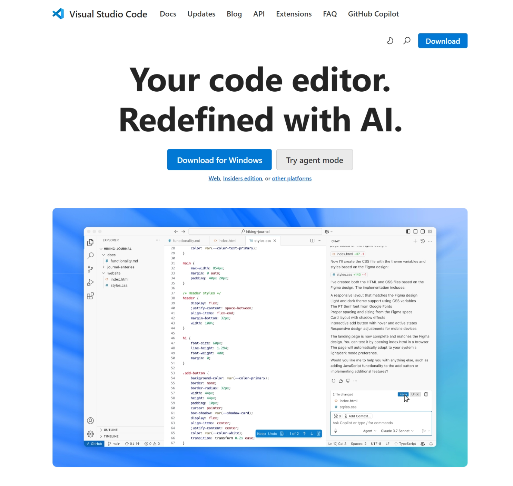
-
Klikkaa Download for Windows-nappia. Sivusto tunnistaa automaattisesti käyttämäsi käyttöjärjestelmän ja tarjoaa sitä vastaavaa asennuspakettia. Jos näin ei kuitenkaan tapahdu, niin klikkaa silloin sivun yläreunasta Download-nappia ja valitse sieltä käyttöjärjestelmääsi vastaava asennuspaketti.
-
Käynnistä lataamasi asennuspaketti tuplaklikkaamalla sitä.
-
Valitse asennuksessa käytettävä kieli (English) ja paina OK-nappia.
-
Hyväksy License Agreement -näkymässä lisenssi valitsemalla I accept the agreement ja klikkaa Next.
-
Hyväksy Select Destination Folder -näkymässä oletuksena tarjottu asennuskansio klikkaamalla Next-nappia.
-
Samoin hyväksy Select Start Menu Folder -näkymässä tarjottu käynnistysvalikon kansionimi klikkaamalla Next.
-
Valitse Select Additional Tasks-näkymässä ne valinnat, jotka haluat ottaa käyttöön. Seuraavat valinnat ovat suositeltavia:
- Add "Open with Code" action to Windows Explorer file context menu
- Add "Open with Code" action to Windows Explorer directory context menu
- Add to PATH (requires shell restart)
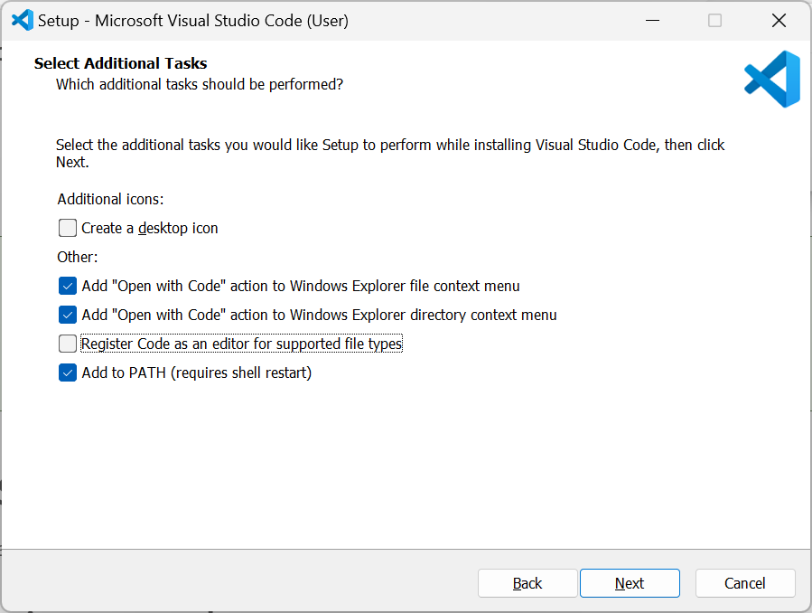
Voit valita myös kohdan Register Code as an editor for Supported file types, jos et käytä aktiivisesti jotain toista tekstieditoria koodien ja muiden tekstitiedostojen muokkaamiseen. Hyväksy tekemäsi valinnat klikkaamalla Next.
-
Käynnistä Ready to Install -näkymässä asennus klikkaamalla Install.
-
Asennusohjelma asentaa kaikki tarvittavat tiedostot sekä määrittelee polkuasetuksen. Lopulta asennusohjelma päättyy Completing the Visual Studio Code Setup Wizard -näkymään, jossa voit klikata Finish päättääksesi asennusohjelman.
Asennusohjelma käynnistää oletuksena viimeisenä vaiheena juuri asennetun Visual Studio Coden.
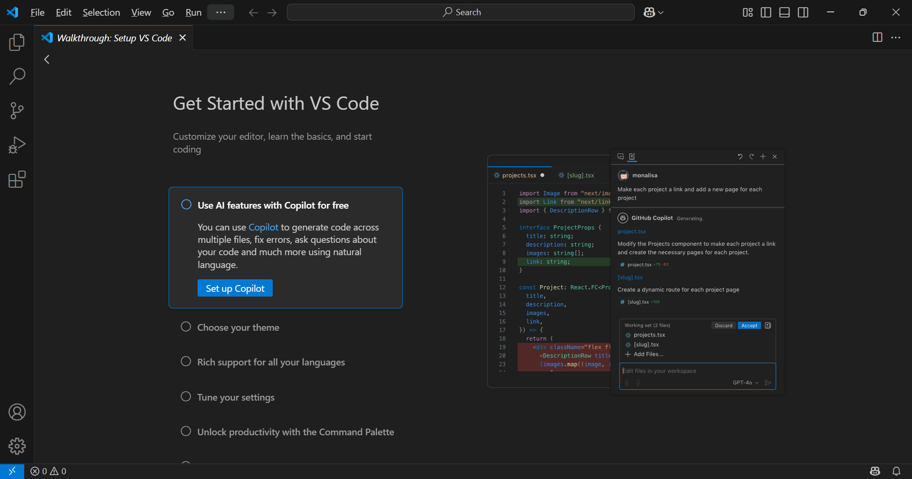
Voit tutustua Visual Studio Coden toimintaan Get started with VS Code -otsikon alta löytyvät opastuksen avulla.
-
Nyt Visual Studio Code on asennettuna ja valmiina käyttöön. Perehdymme sen käyttöön hieman myöhemmin, ennen sitä tutustumme HTML-kielen perusteisiin.
HTML-kielen termistöä
Elementit
HTML-merkkauksessa keskeinen käsite on elementti. Elementiksi kutsutaan kokonaisuutta, jossa on aloitustagi, sisältö ja lopetustagi. Aloitustagi aloittaa kokonaisuuden ja lopetustagi puolestaan päättää sen. Kaikki mitä jää aloitus- ja lopetustagin väliin kutsutaan (elementin) sisällöksi.
Aloitustagin tunnistaa siitä, että se on sana tai lyhenne, joka on sijoitettu <>-merkkien sisälle. Esimerkiksi <p> on yksi yleinen aloitustagi. Lopetustagin tunnistaa siitä, että se on samanlainen kuin aloitustagi, mutta sanan tai lyhenteen edessä on /-merkki. Edellä olevan aloitustagin lopetustagi on </p>.
Sisäkkäiset elementit
Elementtejä voidaan laittaa myös sisäkkäin. Seuraavassa esimerkkikoodissa p-elementti on sijoitettu div-elementin sisälle. Huomaa, että elementit päätetään aina sisemmästä elementistä lähtien. Toisin sanoen alla olevassa esimerkissä </p>-lopetustagi tulee olla ennen </div>-lopetustagia.
<div>
<p>Tämä on tekstikappale.</p>
</div>
Todellisuudessa HTML-dokumentti muodostuu sisäkkäisistä elementeistä. Alla on typistetty HTML-dokumentin rakenne, josta näkee miten HTML-dokumentti päätasolla rakentuu.
<html>
<head>
<title>Sivun otsikko</title>
</head>
<body>
<p>Tämä on tekstikappale.</p>
</body>
</html>
HTML-dokumentti koostuu kahdesta päätason elementistä: head ja body. head-elementti sisältää HTML-sivua kuvaavia tietoja, jotka eivät suoraan näy selainsivulla. Tällainen tieto on esimerkiksi selaimen välilehdellä näkyvä sivun otsikko. body-elementti sisältää HTML-sivun näkyvän sisällön.
Huomaa, että HTML-dokumentti voi sisältää ainoastaan yhden html, head ja body-elementin.
Tämän materiaalin HTML-esimerkeissä on käytetty sisennyksiä, jotta merkkaus olisi luettavampaa. Nämä sisennykset eivät ole pakollisia HTML-merkkauksen toiminnan kannalta, sivu toimii samalla tavalla ilman niitäkin.
Esimerkiksi seuraavat kaksi merkkaustapaa ovat toiminnaltaan täysin identtiset.
<div> <p>Tämä on tekstikappale.</p> </div><div><p>Tämä on tekstikappale.</p></div>Näistä tavoista ensimmäinen on luettavampi ja helpommin muokattava. Tästä syystä on suositeltavaa opetella HTML-merkkauksen looginen sisentäminen heti alusta alkaen.
Määritteet
HTML-elementtiä voidaan tarkentaa määritteillä (attribuuteilla). Ne sijoitetaan aina elementin aloitustagiin. Määrite muodostuu nimi- ja arvoparista. Määritteen nimi ja arvo erotetaan toisistaan =-merkillä.
Alla olevassa esimerkissä a-elementille on määritetty href-määrite. Siinä href on määritteen nimi ja "https://www.yle.fi" on sen arvo. Yleissääntö on, että arvo on aina lainausmerkkien sisällä.
<a href="https://www.yle.fi">Ylen kotisivut</a>
Malttamattomille tiedoksi,
a-elementti (anchor) muodostaa hyperlinkin sivulle. Linkkiä klikkaamalla avautuuhref-määritteessä oleva URL-osoite.
Tulevissa esimerkeissä huomaat, että elementit voivat sisältää useampia tarkentavia määritteitä.
Tyhjä elementti
HTML-elementti voi olla myös niin sanottu tyhjä elementti. Tyhjässä elementissä sisältö ja lopetustagi puuttuvat eli sillä on vain aloitustagi. Alla on esimerkki tyhjästä elementistä, jolla on vain aloitustagi. Aloitustagissa on määritelty elementille kaksi määritettä: src ja alt.
<img src="kuvakansio/kuva.jpg" alt="kuvateksti">
img (image) on tyhjä elementti, jolla sivulle sijoitetaan kuva. Sijoitettavan kuvan osoite määritellään src-määritteellä ja kuvan vaihtoehtoinen kuvateksti määritellään alt-määritteellä. Tässä tapauksessa elementillä ei ole tarvetta sisällölle, joten sillä ei ole sisältöosaa eikä lopetustagia.
Huomaa, että elementillä voi olla monia määritteitä, joista osa on pakollisia ja osa vapaaehtoisia. Esimerkiksi
srcjaaltovat kummatkinimg-elementin pakollisia määritteitä.
Merkkauksessa sisältö on keskiössä
HTML-elementeillä merkataan dokumentin merkityksellistä sisältöä (semantiikkaa), ei sen ulkoasua. Tilanteessa käytettävä HTML-elementti valitaan sen merkityksen perusteella, ei sen ulkoasun perusteella.
Esimerkiksi seuraavassa merkkauksessa h1-elementillä kerrotaan tekstin olevan ensimmäisen tason otsikko eli sivun pääotsikko. Jos tätä elementtiä käytettäisiin ulkoasullisessa merkityksessä eli kun teksti halutaan näyttämään todella isona, niin silloin esimerkiksi ääneen lukevat selaimet korostavat tekstin väärällä tavalla.
<h1>Tämä on sivun pääotsikko</h1>
Yleisimmät HTML-elementit
Alla olevassa taulukossa on HTML-kielen yleisimmin käytetyt elementit. Näiden elementtien avulla saa toteutettua täysin toimivan HTML-sivun.
| elementti | merkitys |
|---|---|
h1, … h6 | otsikko |
p | tekstikappale |
img | kuva |
ul | (pallukka)lista |
li | lista-alkio |
divja span | kääre-elementit |
Tutustutaan seuraavaksi näiden elementtien käyttöön esimerkkien avulla.
Otsikko (h1, … h6)
Otsikkotason elementeillä merkitään dokumentin otsikot. Sivun pääotsikko merkitään h1-elementillä, sen alaotsikot h2-elementeillä ja niin edelleen.
<h1>Tämä on sivun pääotsikko</h1>
Otsikkoelementit näkyvät tyypillisesti lihavoituna ja isommalla tekstikoolla. Niiden ulkoasu muokataan halutunlaiseksi CSS-tyyleillä.

Muistisääntö:
h1, …h6-elementtien nimet ovat lyhenne sanasta header.
Tekstikappale (p)
Tavallinen tekstikappale merkitään p-elementillä.
<p>Suspendisse solades risus nibh, eu pretium…</p>
Tekstikappale näkyy tyypillisesti normaalilla tekstikoolla. Sen ylä- ja alapuolella on pieni väli erottamassa sitä muusta sisällöistä.
Muistisääntö:
p-elementin nimi on lyhenne sanasta paragraph.
Kuva (img)
Kuva merkitään img-elementillä. img on tyhjä elementti (eli sillä ei ole sisältöä eikä lopetustagia). Kuvan osoite määritellään src-määritteellä ja kuvan vaihtoehtoinen teksti alt-määritteellä.
<img src="https://placehold.co/500x350" alt="">
Kuva näkyy tyypillisesti sen luonnollisessa koossa, kuvan kokoa muokataan CSS-tyyleillä.

Muistisääntö:
img-elementin nimi on lyhenne sanasta image.
Linkki (a)
Linkki toiselle sivulle tai saman sivun toiseen kohtaan merkitään a-elementillä. Linkin osoite määritellään href-määritteellä ja elementin sisällöksi tulee linkkiteksti.
<a href="https://sasky.fi">SASKY koulutuskuntayhtymä</a>
Linkki näkyy tyypillisesti alleviivattuna tekstinä. Linkin väri on sininen (linkkiä ei ole vielä avattu) tai violetti (linkki on avattu).

Muistisääntö:
a-elementin nimi on lyhenne sanasta anchor.
Lista (ul ja li)
Lista merkataan ul-elementillä, sen sisällöksi tulee kukin kohta omana li-elementtinään.
<ul>
<li>aloitustagi</li>
<li>sisältö</li>
<li>lopetustagi</li>
</ul>
Listan alkioiden alussa on tyypillisesti pallukka, siksi tätä listaa kutsutaan yleisesti pallukkalistaksi, vaikka sen virallinen nimi on järjestämätön lista.

Listan ulkoasua muokataan CSS-tyylien avulla. Sivujen navigointilinkit toteutetaan usein tällä elementtirakenteella.
Muistisääntö:
ul-elementin nimi on lyhenne sanoista unordered list jali-elementin nimi on lyhenne sanoista list item.Listasta on olemassa variantti, jossa alkiot on numeroitu. Tätä kutsutaan järjestetyksi listaksi eli ordered list. Se merkataan
ol-elementillä ihan samalla tavalla kuinul-lista.
Lohko- ja sisätason elementit
Suurin osa HTML-kielen elementeistä kuuluvat joko lohkotason tai sisätason elementteihin. Niiden oleellinen ero on siinä, miten ne käyttäytyvät sivulle tulostettaessa.
Lohkotason elementit (block-level element) alkavat aina uuden rivin alusta ja niiden jälkeen tulee rivinvaihto eli niiden perään ei tule enää muuta sisältöä. Esimerkiksi otsikot (h1, … h6), tekstikappale (p) ja lista (ul) ovat lohkotason elementtejä.
Sisätason elementit (inline element) puolestaan eivät ala automaattisesti uuden rivin alusta ja ne eivät päätä riviä. Toisin sanoen ne voivat sijaita keskellä tekstiä. Sisätason elementtejä ovat muun muassa linkki (a) ja kuva (img)
Kääreet (div ja span)
div- ja span-elementit eroavat muista edellä esitellyistä elementeistä. Niillä ei ole sisältö- eikä myöskään ulkoasumerkitystä. Ne ovat toisin sanoen
eräänlaisia ”näkymättömiä” kehyksiä eli kääreitä.
<div>
div ja <span>span</span> ovat kääreitä.
</div>

Niitä käytetään silloin, kun halutaan määritellä ulkoasutyylejä isommalle kokonaisuudelle, jolle ei ole olemassa omaa loogista elementtiä.
div on lohkotason elementti ja span on sisätason elementti.
Minkä elementin valitsen?
Valitse elementti aluksi edellä olevista sen perusteella, mikä on sen lähin sisältömerkitys. Kun nämä ovat tulleet tutuiksi, niin voit ottaa htmlreference.io-sivustolta esiteltyjä elementtejä mukaan käyttämiisi elementteihin.
HTML-dokumentti
HTML-dokumentilla on selkeä ja tarkasti määritelty rakenne. Alla on yksinkertaisen HTML5-dokumentin peruspohja.
<!DOCTYPE html>
<html lang="fi">
<head>
<meta charset="UTF-8">
<title>Sivun otsikko</title>
</head>
<body>
<h1>Sivun otsikko</h1>
<p>Tämä on tekstikappale.</p>
</body>
</html>
<!DOCTYPE html>
Dokumentti alkaa aina dokumenttityypillä (DOCTYPE). Se määrittelee, mitä HTML-suositusta dokumentti noudattaa. Dokumenttityyppi on tärkeä määritellä, koska sen perusteella selaimet tulkitsevat dokumentin merkkausta. Vuosien saatossa HTML:stä on tullut useita suosituksia, joista jokaisella on oma dokumenttityyppinsä.
Aikaisemmissa suosituksissa dokumenttityyppien määrittelyt olivat pitkiä tekstipätkiä. HTML5-suosituksen myötä dokumenttityyppi typistettiin lyhyeksi ja ytimekkääksi.
<html lang="fi">
html-elementti aloittaa koko HTML-dokumentin eli se määrittelee koko dokumentin juuren.
Elementin aloitustagiin on hyvä sijoittaa myös lang-määrite, jolla kerrotaan millä kielellä dokumentin sisältö on esitetty. Tätä tietoa hyödyntävät mm. puhesyntetisoijat ja erilaiset käännöstyökalut. Arvo määritellään kielikoodilla, esimerkiksi fi (suomi), en (englanti) ja sv (ruotsi). Dokumentti voi sisältää ainoastaan yhden html-elementin.
<head>
head-elementti sisältää HTML-dokumentin metadatan eli sen tiedon, joka ei suoraan
näy sivulla. Sinne sijoitetaan paljon erilaista tietoa sivusta, kuten esimerkiksi sivun merkistökoodauksesta sekä sivulle linkitetyt tyylimäärite- ja skriptitiedostot. Dokumentti voi sisältää ainoastaan yhden head-elementin.
<meta charset="UTF-8">
meta-elementti määrittelee HTML-dokumentin metatietoa, kuten sivun merkistökoodauksen, kuvauksen, avainsanat, tekijät ja selainikkunan määritykset.
Yleisin meta-elementti on sivun merkistökoodauksen määrittely. HTML5 suosittelee sivun koodaamista UTF-8 –merkistökoodauksella, koska sillä saadaan kattava merkistötuki kohtuullisella tilankulutuksella. Tällöin sivu tallennetaan tekstieditorissa UTF-8 -muodossa ja käytetty merkistökoodaus kerrotaan meta-tagissa.
<title>
title-elementti määrittelee HTML-dokumentin nimen tai otsikon, joka tyypillisesti näkyy selaimen välilehden tekstinä tai tallennetun kirjanmerkin tekstinä.
Huomaa, että dokumentin nimi on usein eri kuin sivun ensimmäinen otsikko, sillä otsikko on usein kiinteä osa sivun kokonaisuutta ja usein se ei toimi dokumentin nimenä. Dokumentti voi sisältää ainoastaan yhden title-elementin.
<body>
body-elementti sisältää HTML-dokumentin oleellisimman osuuden eli itse sisällön. Sille voi määritellä myös yhteisiä elementtimääritteitä, kuten lang, class ja id. Huomaa, että dokumentilla voi olla ainoastaan yksi body-elementti.
Ensimmäinen HTML-sivu
Nyt HTML-kielen käsitteet ja peruselementit ovat tuttuja. Seuraavaksi kääritään hihat ja luodaan ihan ensimmäinen HTML-sivu ja katsotaan, miltä se näyttää selaimessa.
Projektikansion luominen
Kaikki tässä materiaalissa tehtävät tiedostot kannattaa tallentaa samaan sijaintiin, jotta niiden löytäminen on myöhemmin helpompaa. Sitä varten luomme ensin tätä materiaalia varten oman "projektikansion", jota tulemme käyttämään jatkossa.
Tässä ohjeessa neuvotaan, miten projektikansio luodaan Windows-käyttöjärjestelmällä. Jos sinulla on jokin toinen käyttöjärjestelmä käytössä, niin sovella ohjeita. Perusperiaate on sama kaikissa käyttöjärjestelmissä.
-
Käynnistä Windowsin Resurssienhallinta klikkaamalla sen kuvaketta alareunan tehtäväpalkista.
-
Valitse vasemman reunan siirtymisruudusta Tiedostot-vaihtoehto (Documents).
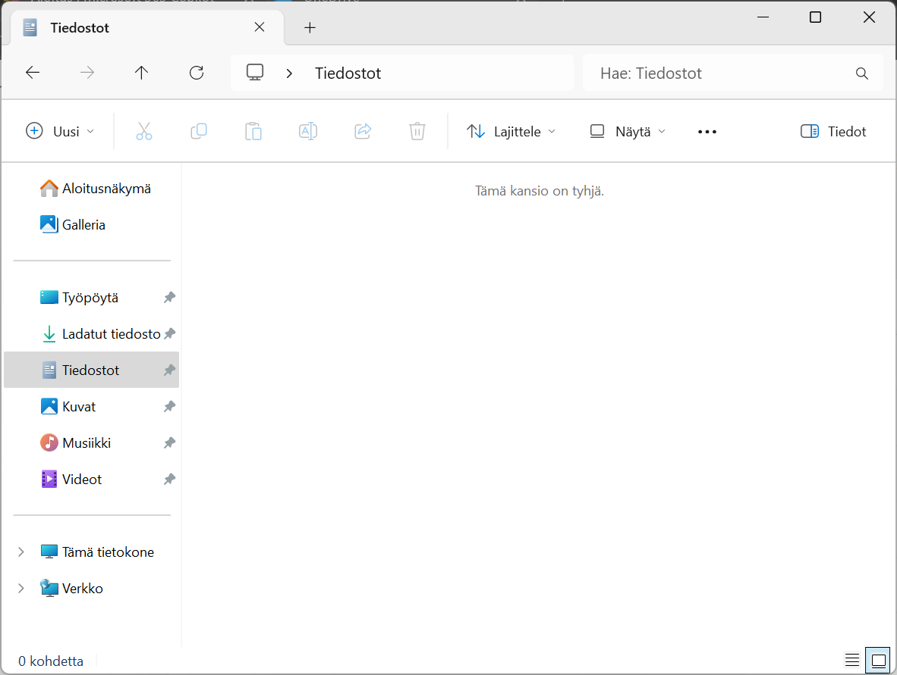 -
Valitse yläreunan valikosta Uusi ja sen alta avautuvasta valikosta Kansio.
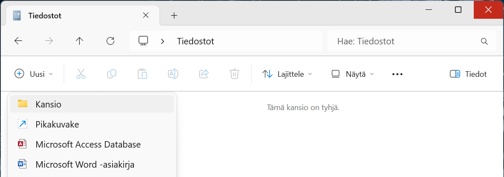 -
Anna uuden kansio nimeksi
koodaajasivut.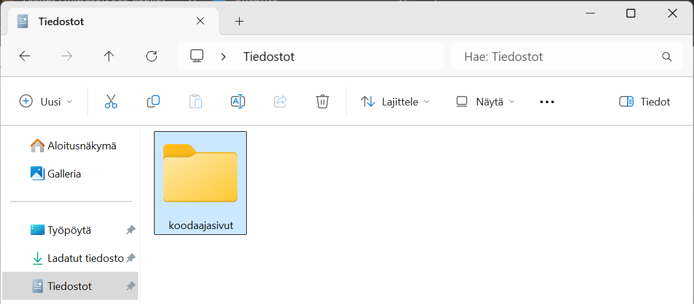
Nyt sinulla on uusi projektikansio luotuna omalle koneellesi, tätä kansiota käytämme jatkossa uusien tiedostojen tallennuspaikkana.
Voit halutessasi jatkossa sijoittaa tiedostot omaan, itse määrittelemääsi kansioon. Myöhemmissä vaiheissa tehtävät tiedostot toimivat samalla tavalla, sijaitsevat ne missä tahansa. Muista kuitenkin soveltaa ohjeistusta aina silloin, kun ohjeistuksessa tallennetaan tai avataan tiedostoa.
Projektikansion avaaminen Visual Studio Codessa
Seuraavaksi avaamme edellä luomamme projektikansion Visual Studio Codessa. Seuraavat ohjeet toimivat sellaisenaan, vaikka olisit asennuksen jälkeen tutustunut Get Started with VS Code -tutoriaaliin.
-
Avaa Visual Studio Code.
-
Valitse File-valikon alta Open Folder….
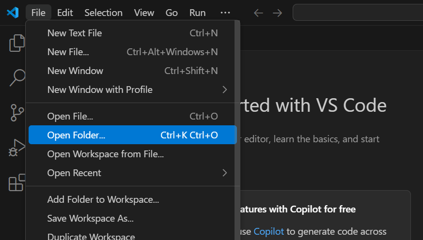 -
Valitse avautuvan ikkunan vasemmasta reunasta ensin Tiedostot ja valitse tämän jälkeen koodaajasivut-kansio.
Jos loit kansion eri nimellä tai eri paikkaan, niin etsi ja valitse se tässä kohdassa.
Hyväksy valintasi painamalla Valitse kansio -nappia.
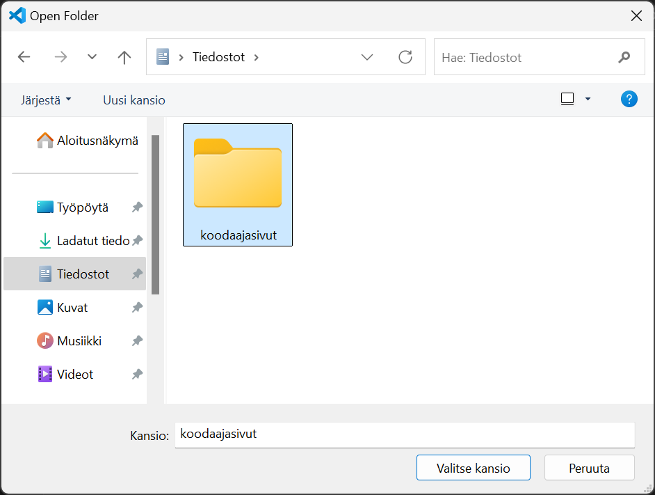 -
Visual Studio Code varmistaa vielä, että luotatko kansiossa olevien tiedostojen tekijöihin. Koska tämä kansio tulee sisältämään sinun itsesi tekemiä tiedostoja, niin voit turvallisesti valita Yes, I trust the authors -vaihtoehdon.
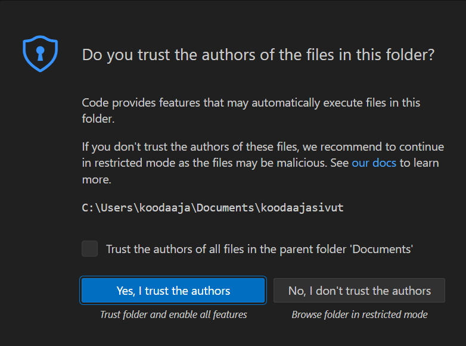 -
Projektikansio on nyt avattu Visual Studio Codessa ja sinne voi nyt alkaa luomaan omia tiedostoja.
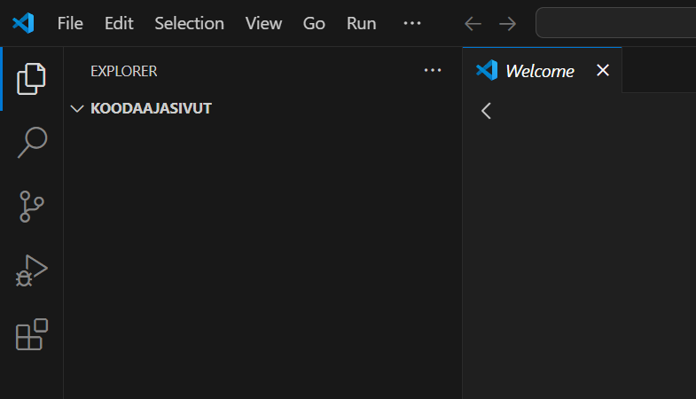
HTML-sivun luominen
Seuraavaksi luomme projektikansioon uuden HTML-sivun.
-
Kopioi seuraava ohjelmakoodi leikepöydälle.
Vinkki: Voit kopioida koko tekstin klikkaamalla koodialueen oikeassa yläkulmassa olevaa kopioitikuvaketta.
<!DOCTYPE html> <html lang="fi"> <head> <meta charset="UTF-8"> <title>Hei koodausmaailma!</title> </head> <body> <h1>Hei koodausmaailma!</h1> <p>Tämä sivu on ensimmäinen askel kohti koodaamisen ihmeellistä maailmaa.</p> </body> </html> -
Klikkaa KOODAAJASIVUT-tekstin vieressä olevaa New File…-kuvaketta.
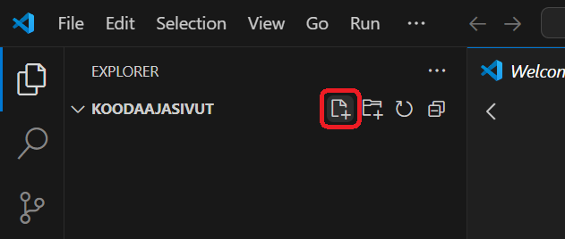
-
Syötä uuden tiedoston nimeksi
01-hello.htmlja paina Enter-näppäintä.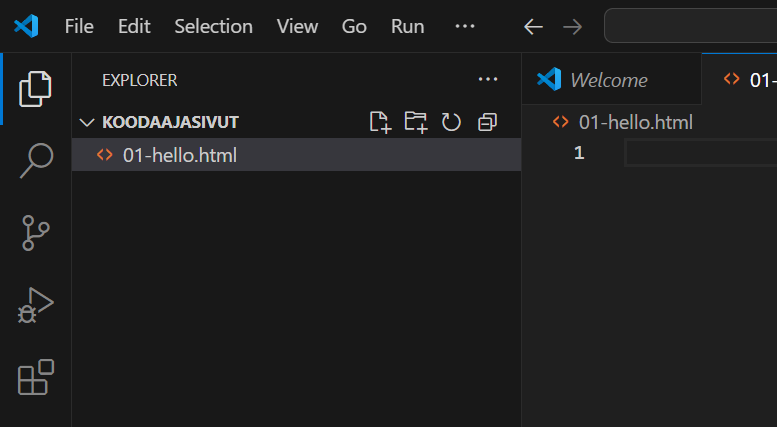
Tämän materiaalin tiedostonimet alkavat numeroilla, jolloin niiden löytäminen jatkossa on helpompaa.
-
Liitä leikepöydälle kopioimasi HTML-koodi editorinäkymään.
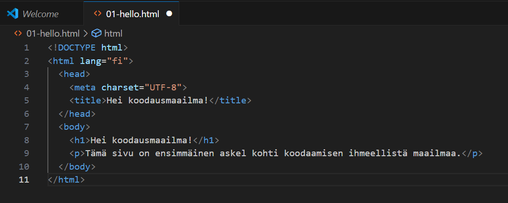
Tiedostonimen perässä on täytetty ympyrä. Se ilmoittaa, että tiedostoa on muokattu edellisen tallennuksen jälkeen.
Tässä vaiheessa kannattaa myös tarkistaa, että VS Coden alapalkissa näkyy, että merkistökoodauksena (encoding) käytetään UTF-8-muotoa.
-
Tallenna tiedosto valitsemalla File-valikosta kohta Save.
Nyt tiedosto on tallennettu levylle. Tämän voi tarkistaa välilehden otsikosta. Tiedostonimen perässä on X-kuvake. Tämä ilmoittaa, että tiedostoon ei ole tehty viimeisimmän tallennuksen jälkeen.
HTML-sivun avaaminen selaimessa
Seuraavaksi voidaan katsoa, miltä sivu näyttää selaimessa.
-
Käynnistä Windowsin Resurssienhallinta klikkaamalla sen kuvaketta alareunan tehtäväpalkista.
-
Valitse vasemman reunan siirtymisruudusta Tiedostot-vaihtoehto (Documents).
-
Avaa koodaajasivut-kansio tuplaklikkaamalla sen kuvaketta.
-
Tuplaklikkaa kansiosta löytyvää 01-hello.html-tiedostoa.
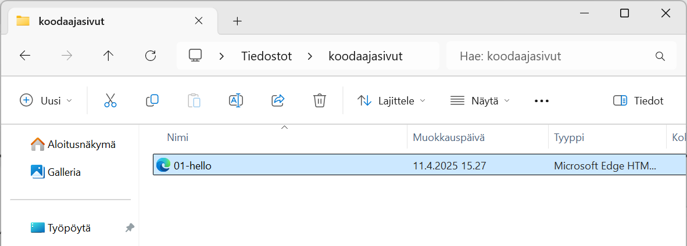
-
HTML-sivu on nyt selaimessa auki.
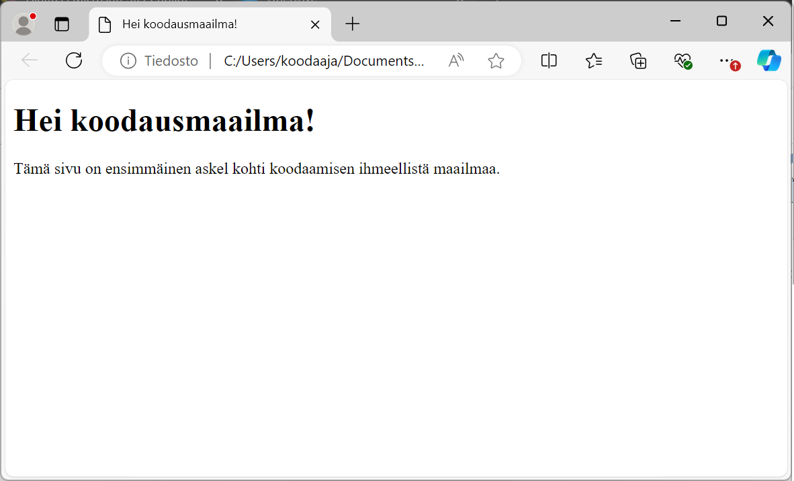
-
Kokeile muuttaa HTML-sivua seuraavasti:
- Muuta HTML-tiedostoa Visual Studio Codessa. Muutos voi olla esimerkiksi p-elementissä olevan tekstin muuttaminen toisenlaiseksi.
- Tallenna tekemäsi muutokset. Tarkista, että tiedostonimen perässä oleva ympyrä muuttuu X-kuvakkeeksi.
- Päivitä selainsivu painamalla F5-näppäintä tai painamalla osoiterivin vasemmalla puolella olevaa päivityskuvaketta.
Nyt osaat luoda projektikansioon uusia tiedostoja ja tiedät, miten pääset katsomaan niitä selaimessa.
CSS-tyylit
Aikaisemmin tutustuttiin HTML-merkkaukseen, jolla esitetään dokumentin sisältö. Ohjeena tagien valinnassa oli, että kussakin tilanteessa käytettävä tagi valitaan sisällön perusteella, ei halutun ulkoasun perusteella. Tämän seurauksena HTML-sivu itsessään on vielä aika karun näköinen.
HTML-sivun ulkoasua voidaan koristella CSS-tyylien (Cascading Style Sheets) avulla. Nämä CSS-tyylit esiteltään tyylisääntöinä (style rules), jotka kokonaisuutena määrittelevät HTML-sivulle sen ulkoasun. Tyylisäännöt koostuvat yksittäisistä säännöistä, jotka määrittelevät tietylle määritellylle kokonaisuudelle ulkoasumääritykset.
Sääntö
Yksittäinen sääntö muodostuu selektorista ja aaltosulkeilla rajatusta
deklaraatiolohkosta. Selektori määrää mitä elementtejä sääntö koskee. Selektori voi olla
yksinkertaisimmillaan elementin nimi (kuten esimerkiksi h1). Deklaraatiolohko sisältää yhden tai useamman määrittelyn, jotka muokkaavat kohteena olevan elementin ulkoasua. Yksittäistä määrittelyä kutsutaan deklaraatioksi, se päättyy aina puolipisteeseen.
Alla olevassa esimerkkisäännössä selektorina on h1-elementti ja deklaraatiolohkossa on yksi deklaraatio.

Deklaraatio
Deklaraatio koostuu ominaisuuden nimestä ja sen arvosta. Nimi määrittelee, mitä tyyliominaisuutta muokataan, arvo määrittelee ominaisuudelle uuden arvon. Ominaisuuden nimi ja arvo erotetaan toisistaan aina kaksoispisteellä.
Deklaraatiolohko voi sisältää useamman deklaraation. Deklaraatiot käsitellään ylhäältä alas, myöhäisempi määritys korvaa aiemman.
Esimerkiksi seuraavassa esimerkissä määritellään p-elementille marginaali, tekstin koko ja riviväli. Ensimmäisellä rivillä oleva margin-määrite asettaa saman levyisen marginaalin elementin jokaiselle sivulle. Toisella rivillä oleva margin-bottom-määrite korvaa edellä määritetyn alamarginaalin uudella arvolla.
p { margin: 1em;
margin-bottom: 2em;
font-size: 80%;
line-height: 1.4;
Edellä kuvattu korvaavuus ei todennäköisesti tunnu ihan selkeimmältä, mutta opit niiden toiminnan myöhemmin, kun opit lisää CSS-määritteistä. Lisäksi kannattaa varautua siihen, että tulet oppimaan tästä monesta muusta myös tekemiesi virheiden kautta. 😉
Tyylisääntöjen liittäminen
Tyylisäännöt voidaan liittää kolmella eri tavalla osaksi HTML-sivua.
- Tiedostoviittauksella
link-elementin avulla, jolloin tyylit liitetään omana tiedostona. - Tyylit sijoitetaan HTML-dokumentin
head-osioon sijoitetunstyle-elementin sisälle. Tällä menetelmällä HTML-dokumentilla on omat, yksilölliset CSS-tyylissäännöt. - Yksittäisen HTML-elementin aloitustagiin
style-määritteenä, jolloin tyyli koskee ainoastaan kyseistä elementtiä.
Näistä ensimmäinen vaihtoehto on suositeltavin, siinä tyylisäännöt liitetään sivustoon erillisenä tiedostona. Tällä tavalla koko sivustolla voidaan käyttää samoja tyylisääntöjä ja koko sivustoa koskevien tyylien muuttaminen on pidemmän päälle nopeampaa.
Tutustutaan seuraavaksi siihen, miten tyylitiedosto liitetään osaksi HTML-sivua.
-
Luo projektikansioon uusi tiedosto, anna sen nimeksi
02-tyylit.htmlja liitä sen sisällöksi seuraava HTML-koodi:<!DOCTYPE html> <html lang="fi"> <head> <meta charset="UTF-8"> <title>Tyyleillä saat ulkoasun kohdilleen</title> <link href="02-tyylit.css" rel="stylesheet"> </head> <body> <h1>Tyyleillä saat ulkoasun kohdilleen!</h1> <p>Tämä sivu on esimerkki siitä, miten tyyleillä saa muokattua ulkoasua (oletustyyliä) hienommaksi.</p> <p>Tämän sivun ulkoasun määrittely on tehty kuudella deklaraatiolla.</p> </body> </html>Tämä dokumentti on rakenteeltaan identtinen aikasempien esimerkkien kanssa. Keskeinen lisäys on
head-elementissä olevalink-elementti, jolla CSS-tiedosto saadaan kytkettyä osaksi HTML-sivua. Tässä HTML-dokumenttiin linkitetään02-css.css-niminen tiedosto. -
Luo projektikansioon uusi tiedosto, anna sen nimeksi
02-tyylit.cssja liitä sen sisällöksi seuraavat CSS-tyylisäännöt:body { font-family: system-ui, sans-serif; background-color: #B3BFB8; color: #000; max-width: 40em; margin: 2em auto; } h1 { font-size: 1.25em; } -
Avaa HTML-sivu selaimessa samalla tavalla, mitä edellisellä sivulla ohjeistettiin.
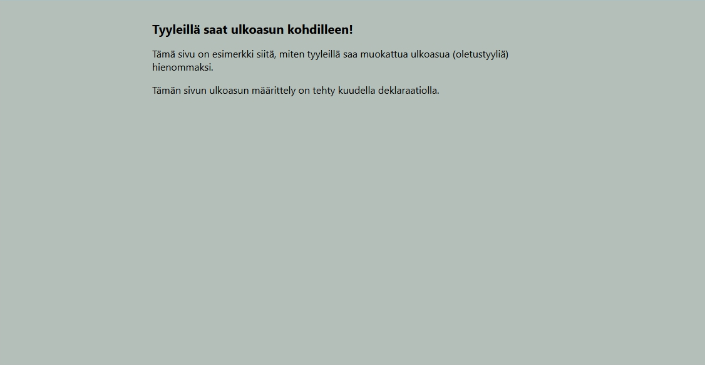
Tyylisäännöt avattuna
Seuraavaksi tutustutaan hieman siihen, mitä edellä olevat tyylisäännöt määrittelevät.
body {
font-family: system-ui, sans-serif;
background-color: #B3BFB8;
color: #000;
max-width: 40em;
margin: 2em auto;
}
Alussa oleva body-selektori kohdistaa deklaraatiolohkossa olevat määrittelyt vaikuttamaan dokumentin body-elementtiin. Siihen määritellään tyypillisesti koko dokumenttia koskevat tyylimääritykset, kuten käytettävä fontti, taustaväri ja tekstinväri.
font-family-asetuksella määritellään elementissä (ja tässä tapauksessa koko dokumentissa) käytettävä fontti. system-ui ja sans-serif ovat geneerisiä tunnisteita, eivät siis oikeita fonttien nimiä. Käytettävät fontit listataan pilkulla erotettuna, joista ensimmäiseksi laitteelta löytyvää fonttia käytetään ensisijaisesti.
Esimerkissä ensisijaisesti käytetään ns. system-ui-fonttia, joka on laitteen käyttöliittymässä käytössä oleva oletusfontti. Toissijaisesti käytetään mitä tahansa sans-serif-perheen fonttia, jolloin käytetään päätteetöntä fonttia, joka laitteessa oletuksena käytetään. Tämän seurauksena Windows-koneissa käytetään todennäköisesti Segoe UI -fonttia ja Mac OS -koneissa puolestaan San Francisco -fonttia.
Osa CSS-tyylimäärityksistä ovat sellaisia, jotka periytyvät (inherit) lapsielementeille, jolloin niitä ei tarvitse määritellä jokaiselle alaelementille erikseen. Esimerkiksi edellä käsitelty
font-familyon sellainen. Kun käytettävä fontti määritelläänbody-elementille, niin silloin samaa fonttia käytetään kauttaaltaan koko dokumentissa, jollei sitä erikseen määritellä toiseksi.W3Schoolin sivuilla on tiivis esittely font-family-määritteestä. Sivun taulukossa oleva
Inherited: yes-rivi kertoo, että kyseinen määrite periytyy.
background-color asettaa elementille sen taustavärin. Esimerkissä värikoodi annetaan ns. HTML-värikoodina, missä arvo alkaa #-merkillä ja sen perässä on joko kolme tai kuusi numeroa. Tässä tapauksessa taustaväriksi määritellään vaaleanvihreä. Taustaväri ei periydy sen lapsielementeille. Elementtien taustaväri on oletuksena läpinäkyvä, jolloin koko sivun taustaväri on automaattisesti muidenkin sivulla olevien elementtien taustaväri.
HTML-värikoodi on oikeasti numeroita, vaikka siellä näyttää esiintyvän kirjaimia joukossa. Värikoodi esitetään kompaktimmassa heksadesimamaalimuodossa, jossa käytössä olevat numerot ovat
0,1,2,3,4,5,6,7,8,9,A,B,C,D,EjaF.
color määrittelee käytettävän tekstivärin, joka esimerkkitapauksessa asetetaan mustaksi. Tekstivärin määritys periytyy lapsielementeille eli esimerkissä koko dokumentin tekstiväri on musta, jollei sitä erikseen määritetä jollekin elementille toiseksi. Poikkeuksena ovat linkit, joiden oletusvärit eivät muutu, ne täytyy asettaa erikseen.
Suositeltava käytäntö on, että
background-colorettäcolormääritellään aina yhdessä. Tällöin järjestelmän poikkeavat oletusvärit eivät sekoita tarkkaan mietittyä ulkoasua.
Netistä löytyy paljon erilaisia palveluita, joilla pystyy luomaan helpolla toisiinsa sopivia väriyhdistelmiä. Esimerkiksi Coolors on yksi hyvin helppokäyttöinen väriyhdistelmien luontiin soveltuva palvelu.
max-width-asetuksella määritellään sivun suurin sallittu leveys eli sen alueen leveys, jossa sivun sisältö on. Arvoksi määritellään 40em, joka tarkoittaa 40 kirjaimen korkeutta.
em-yksikkö on ns. suhteellinen yksikkö eli se saa arvonsa käytössä olevaan fonttikokoon perustuen. Tämä yksikkö mahdollistaa skaalautuvien sivujen toteuttamisen, jossa sivun ulkoasua ei ole sidottu tiettyyn esimääriteltyyn arvoon.
margin-asetuksella määritellään koko dokumentin ympärillä olevat marginaalialueet. 2em määrittelee sivun ylä- ja alareunaan kahden kirjaimen korkuisen tyhjän alueen. auto puolestaan keskittää sisällön vaakasuunnassa keskelle niin, että sekä vasemmassa että oikeassa reunassa on saman kokoinen tyhjä alue.
h1 {
font-size: 1.25em;
}
Tämä tyylisääntö kohdistuu pelkästään sivulla oleviin h1-elementteihin. font-size-asettaa niiden fonttikooksi 1,25 kertaa tavallista tekstikokoa isomman koon. Vaihtoehtoisesti tässä voisi käyttää myös arvoa 125%.
Nyt sinulla on pieni käsitys siitä, mitä CSS-tyylit ovat ja mitä niillä voi saada aikaan.
Laatikkomalli
HTML:ssä kaikki elementit voidaan ajatella jonkilaisina laatikkoina. CSS:n puolella jokainen elementti noudattaa ns. laatikkomallia (box model). Laatikkomallissa jokaisella elementillä on sitä ympäröivä kehys, kehyksen ulkopuolelle jäävä marginaali ja kehyksen sisäpuolelle jäävä täyte.
Seuraavissa kohdissa tutustutaan h2-elementin laatikkomalliin. HTML-koodissa elementti on esitetty seuraavasti:
<h2>Tuotteet</h2>
Kehys
Jokaisella HTML-elementillä on sitä ympäröivä kehys (border), joka on oletuksena näkymätön. Kehyksen paksuus, tyyli ja väri määritellään border-määritteellä. Seuraavassa esimerkissä kehysviivan paksuudeksi määritellään yksi pikseli (1px), kehysviivan tyyliksi yhteinen viiva (solid) ja väriksi musta (#000000).
h2 {
border: 1px solid #000000;
}
CSS mahdollistaa myös kehyksen jokaiselle sivulle yksilölliset määritykset. Esimerkiksi alla olevassa tyylisäännössä määritellään h2-elementin kullekin sivulle omat kehysviiva-määritykset.
h2 {
border-top: 2px solid #999;
border-left: 3px solid #333;
border-right: 3px solid #666;
border-bottom: 2px solid #000;
}
Täyte
Sisällön (eli tässä tapauksessa tekstin) ja kehyksen väliin jäävää aluetta kutsutaan täytteeksi (padding), joka määritellään padding-asetuksella. Seuraavassa esimerkissä asetetaan ylä- ja alareunan täytteeksi 2em. Vastaavasti vasemman ja oikean reunan täytteeksi asetetaan 3em.
h2 {
padding: 2em 3em;
}
Jollain elementeillä on määritelty lähtökohtainen oletustäyte, jonka joutuu tietyissä tilanteissa korvaamaan.
Marginaali
Kahden vierekkäisen elementin kehysten väliin jäävää aluetta kutsutaan marginaaliksi (margin), joka määritellään margin-asetuksella. Seuraava esimerkki määrittelee jokaiselle sivulle oman marginaaliarvon. Marginaalien määritys lähtee ylämarginaalista ja etenee siitä myötäpäivään niin, että neljäs arvo määrittelee vasemman reunan marginaalin.
h2 {
margin: 1em 2em 1em 2em;
}
Edellä olevan esimerkin voisi esittää tiiviimmin seuraavasti, koska siinä on pareittain samat arvot.
h2 { margin: 1em 2em; }
Jollain elementeillä on lähtökohtaisesti määriteltynä oletusmarginaali, joka jossain tilanteissa täytyy erikseen poistaa. HTML-sivuja tehdessäsi saatat törmätä seuraavanlaiseen CSS-tyylisääntöön. Se poistaa oletuksena määritellyt täytteet ja marginaalit kaikista elementeistä (*-selektori). Tällä tavalla voidaan varmistaa, että sivun sisältö näkyy todennäköisemmin samanlaisena eri laitteilla.
* {
margin: 0;
padding: 0;
}Yhden sivun kotisivupohja
Seuraavaksi toteutamme yksinkertaiset yhden sivun kotisivut (one page website). Siinä kaikki sisältö sijaitsee yhdellä sivulla, jossa sisältöjen välillä liikutaan skrollaamalla sivua ylös- ja alaspäin. Tämän tyyppiset sivut toimivat loistavasti silloin, kun sisältöä on maltillisesti, kuten esimerkiksi profiilisivulla, CV:ssä tai tapahtumasivustolla.
HTML-sivupohja
Ensin luomme HTML-sivupohjan. Luo projektikansioon uusi tiedosto, anna sen nimeksi 03-onepage.html ja liitä sisällöksi seuraava HTML-koodi.
<!DOCTYPE html>
<html lang="fi">
<head>
<meta charset="UTF-8">
<meta name="viewport" content="width=device-width, initial-scale=1.0">
<title>Kotisivut Helposti - räätälöityjä kotisivuja joka lähtöön</title>
<link href="03-onepage.css" rel="stylesheet">
</head>
<body>
TODO etusivu
TODO palvelut
TODO referenssit
TODO yhteystiedot
TODO alaotsake
</body>
</html>
Kuten varmasti arvasit, niin tämä sivu ei näytä vielä juuri miltään. Sivupohja itsessään on ihan samanlainen, mitä aiemmin. Uutena lisäksenä oli meta viewport -määritys, joka varmistaa, että sivusto näyttää fiksulta myös mobiililaitteilla. Tästä löytyy lisätietoa w3School-sivuston Responsive Web Design - The Viewport -sivulta.
Yksittäiset sivut
Seuraavissa kohdissä lisätään TODO-rivien paikalle yksi kerrallaan sivun sisältöä.
-
Korvaa
TODO etusivu-rivi seuraavalla HTML-koodilla:<header> <div> <h1>Kotisivut Helposti</h1> <p>Teemme yksinkertaisia ja edullisia kotisivuja yhdistyksille ja yksityishenkilöille.</p> <p>Tutustu palveluihimme ja ota yhteyttä.</p> <nav> <ul> <li><a href="#palvelut">palvelut</a></li> <li><a href="#referenssit">referenssit</a></li> <li><a href="#yhteystiedot">yhteystiedot</a></li> </ul> </nav> </div> </header>Tässä HTML-koodissa on aikaisempaan nähden kaksi uutta elementtiä:
headerjanav. Ne ovat ns. semanttisia elementtejä eli ne määrittelevät sisällön merkityksen suhteessa koko sivuun.header-elementillä määritellään sivun yläotsake. Tässä esimerkissäheader-elementti sisältää sen sisällön, mitä sijoitettaisiin sivuston etusivulle.nav-elementti sisältää ne linkit, joilla navigoidaan (eli liikutaan) sivun sisällä.Navigointilinkkien osoitteiden alussa on
#-merkki, jolla tehdään linkki sivun sisällä toiseen kohtaan. Tämä merkintätapa avautuu seuraavassa kohdassa paremmin, kun määrittelemme elementille tunnisteen. -
Korvaa
TODO palvelut-rivi seuraavalla HTML-koodilla:<section id="palvelut"> <h2>Tätä me teemme</h2> <p>Yrityksemme tarjoaa kattavia palveluja, jotka keskittyvät digitaalisen läsnäolon parantamiseen ja asiakaskokemuksen kehittämiseen.</p> <div class="palvelut"> <div> <h3>Kotisivujen suunnittelu ja toteutus</h3> <p>Tarjoamme kattavat kotisivujen suunnittelu- ja toteutuspalvelut, jotka varmistavat modernin ja käyttäjäystävällisen verkkosivuston. Räätälöimme sivuston vastaamaan tarpeitasi, jotta voit tarjota parhaan mahdollisen käyttäjäkokemuksen.</p> </div> <div> <h3>Ylläpitopalvelut</h3> <p>Pidämme huolta verkkosivustosi toimivuudesta ja turvallisuudesta jatkuvilla ylläpitopalveluilla. Varmistamme, että sivustosi on aina ajan tasalla ja suojattu mahdollisilta uhilta.</p> </div> <div> <h3>Hakukoneoptimointi (SEO)</h3> <p>Parannamme verkkosivustosi näkyvyyttä hakukoneissa tehokkaiden hakukoneoptimointipalveluiden avulla. Autamme sinua saavuttamaan korkeammat sijoitukset hakutuloksissa ja houkuttelemaan enemmän kävijöitä sivustollesi.</p> </div> <div> <h3>Sisällöntuotanto</h3> <p>Luomme laadukasta ja kiinnostavaa sisältöä, joka puhuttelee kohdeyleisöäsi ja tukee yrityksesi viestintää. Sisällöntuotantopalvelumme kattavat kaiken blogikirjoituksista ja artikkeleista aina markkinointimateriaaleihin.</p> </div> <div> <h3>Kotisivujen päivitys ja muokkaus</h3> <p>Tarjoamme joustavia päivitys- ja muokkauspalveluita, joiden avulla voit pitää verkkosivustosi ajan tasalla ja vastaamaan muuttuvia tarpeita. Päivitämme sisältöä, ulkoasua ja toiminnallisuuksia tarpeidesi mukaan.</p> </div> </div> </section>Tässä kokonaisuuden merkkaus on myöskin pääosin tuttua entuudestaan. Koko sisältö on kääritty
section-elementin sisälle, joka sekin on semanttinen elementti. Sillä voidaan merkitä yksittäinen kokonaisuus, tässä tapauksessa tapauksessasection-elementti sisältää Palvelut-alasivun sisällön.section-elementille on annettuid-määritteellä tunniste. Tunniste määrittelee elementille yksilöllisen nimen, jolla siihen voidaan viitate muissa yhteyksissä. Mille tahansa HTML-elementille voi määritellä tunnisteen, kunhan se on HTML-sivun sisällä täysin yksilöllinen.Etusivun navigoinnissa palvelut-osion osoitteena on
#palvelut. Kun käyttäjä klikkaa tätä linkkiä, niin selain siirtyy sivun sisällä siihen kohtaan, josta tuo#-merkin perässä oleva tunniste on. Eli tässä tapauksessa selain siirtyy edellä lisätynsection-elementin alkuun.div-elementille määriteltyclass-määrite määrittelee ko. elementille luokkanimen. Luokkanimet ovat käteviä, kun halutaan kohdistaa ko. elementille juuri tietyt tyylimääritteet. Tästä näet esimerkin myöhemmin, kun lisäämme tälle HTML-sivulle tyylimääritteet. Toisin kuin tunnisteita, niin samaa luokkanimeä voi käyttää HTML-sivulla useamman kerran.Huomaa, että HTML-sivulla voi olla saman niminen tunniste (
id) ja luokka (class), ne eivät riitele keskenään. Näiden kanssa on silti hyvä olla tarkkana. Saatat nimittäin törmätä tilanteeseen, kun ihmettelet CSS-tyylimäärityksesi toimimattomuutta ja huomaat lopulta, että olet vahingossa tyylisäännöt luokan sijasta tunnisteelle. -
Korvaa
TODO referenssit-rivi seuraavalla HTML-koodilla:<section id="referenssit"> <h2>Referenssejä</h2> <p>Tässä muutamia esimerkkejä toteuttamistamme kotisivuista.</p> <div class="referenssit"> <div> <h3>Kylän Kunto</h3> <img src="./03-kunto.jpg" alt="Kylän Kunnon kotisivut"> <p>Tämä kesäinen kotisivu on suunniteltu kylän urheilutoimintaa edistävälle yhdistykselle. Yhdistys ylläpitää talvella hiihtolatuja ja kesällä tarjoaa mahdollisuuden soutaa kirkkoveneellä. Sivustolla esitellään yhdistyksen tarjoamat aktiviteetit ja palvelut, sekä annetaan tietoa tapahtumista ja yhteystiedoista.</p> </div> <div> <h3>Puuseppä Hirvonen</h3> <img src="./03-puuseppa.jpg" alt="Puusepän kotisivut"> <p>Tämä yksinkertainen ja tyylikäs kotisivu on suunniteltu puusepälle, joka tarjoaa laadukkaita ja kestäviä puutöitä. Sivustolla esitellään puusepän palvelut, kuten huonekalujen valmistus, korjauspalvelut, mittatilaustyöt ja sisustussuunnittelu. Yhteystiedot-osio mahdollistaa helpon yhteydenoton. Sivuston värimaailma koostuu mustasta, valkoisesta, vihreästä ja punaisesta, mikä luo raikkaan ja ammattimaisen ilmeen.</p> </div> <div> <h3>Taloustuonti Oy</h3> <img src="./03-tuonti.jpg" alt="Maahantuontiyrityksen kotisivut"> <p>Tämä kotisivu on suunniteltu taloustavaroiden maahantuontia harjoittavalle yritykselle. Sivustolla esitellään yrityksen tarjoamat palvelut, kuten tuotteiden maahantuonti, varastointi ja logistiikka, jakelu ja myynti sekä asiakaspalvelu ja tuki.</p> </div> </div> </section>Tämä on rakenteeltaan hyvin samankaltainen, kuin edellinen osio. Tässä osiossa hyödynnetään kolmea valmista kuvaa. Lataa ja tallenna ne samaan kansioon HTML-tiedoston kanssa.
- Tallenna tämä kuva nimellä
03-kunto.jpg. - Tallenna tämä kuva nimellä
03-puuseppa.jpg. - Tallenna tämä kuva nimellä
03-tuonti.jpg.
Vinkki: Voit tallentaa kuvat klikkaamalla linkin päällä hiiren kakkospainikkeella ja valitsemalla ponnahdusvalikosta kohta Tallenna linkki nimellä. Valitse kuvan tallennuspaikaksi projektikansio.
- Tallenna tämä kuva nimellä
-
Korvaa
TODO yhteystiedot-rivi seuraavalla HTML-koodilla:<section id="yhteystiedot"> <h2>Kiinnostuitko?</h2> <p>Yrityksemme toimitilat ovat Tampereella. Olet lämpimästi tervetullut toimistollemme keskustelemaan siitä, miten voisimme sinua auttaa.</p> <address> Kuninkaanakatu 24<br> 33200 Tampere<br> <br> ☎ <a href="tel:+358400112233">0400 112233</a> </address> </section>Tässä osiossa
address-elementti on uusi. Sillä merkitään sivulla olevat osoitetiedot. Huomaa myös linkin erikoinen osoite. Tällä tavalla puhelinnumero avautuu älypuhelimissa suoraan puhelinsovellukseen, kun sitä napautetaan sivulla.br-elementit tekevät pakotetun rivivaihdon. Sitä voi käyttää mm.address-elementissä tekstin rivitykseen. Muistisääntönäbrtulee sanasta break. -
Korvaa
TODO alaotsake-rivi seuraavalla HTML-koodilla:<footer> <p>© 2025 Kotisivut Helposti</p> <p>Etusivun taustakuva unsplash.com, muun sisällön on luonut Copilot-tekoäly.</p> </footer>Tämä määrittelee
footer-elementin, joka on myös semanttinen elementti. Sitä käytetään merkaamaan sivun alaotsake. Se sisältää yleensä ns. copyright-tiedot sekä mahdolliset rekisteriselosteet.
{kind=link}
{kind=link}
{kind=link}
Näiden jälkeen sivun HTML-osuus on valmis. Se ei näytä tällä hetkellä kovin ihmeelliseltä, koska siihen ei ole vielä kytketty tyylisääntöjä. Kun sivu avataan selaimessa, niin se näyttää seuraavanlaiselta:
{kind=link}
Vihje: Kuvaa klikkaamalla saat näkyville koko sivun kuvaruutukopion.
Seuraavaksi lähdemme määrittelemään sivun ulkoasua.
Kotisivupohjan ulkoasu
Edellisessä vaiheessa koostettiin osa osalta yhden sivun kotisivut pienelle kotisivuja tekevälle yritykselle. Seuraavaksi määritellään tälle kotisivulle pala palalta ulkoasu.
Luo projektikansioon uusi tiedosto, anna sen nimeksi 03-onepage.css ja liitä sen sisällöksi seuraavissa kohdissa olevat CSS-tyylimääritykset.
-
Aivan ensimmäiseksi tuodaan Google Fonts -palvelusta sivustolla käytettävä Inter-fontti. Tämä tapahtuu seuraavalla tuontilauseella, kopioi ja liitä se CSS-tiedoston alkuun.
@import url('https://fonts.googleapis.com/css2?family=Inter:ital,opsz,wght@0,14..32,100..900;1,14..32,100..900&display=swap'); -
Seuraavaksi määritellään sivustolla käytettävät värit ja pari arvoa. Tässä hyödynnetään CSS:n muuttujia, joiden avulla arvot määritellään vain kerran ja tämän jälkeen käytetään niille annettuja nimiä. Kopio ja liitä seuraava teksti edellisen
import-lauseen alle.:root { --primary-dark: #B9314F; --primary: #D65C70; --primary-light: #EFBEC6; --neutral-darkest: #000000; --neutral-darkest-alpha: rgba(0,0,0,0.7); --neutral: #E7ECEF; --neutral-lightest: #FFFFFF; --border-radius: 0.5em; --max-width: 40em; } -
Nollataan vielä elementtien alkuarvot. Kopioi ja liitä seuraavat sääntö edellisten alle.
* { padding: 0; margin: 0; box-sizing: border-box; }Tämä sääntö poistaa
margin- japadding-asetuksista niiden alkuarvot, jonka seurauksena sivun pitäisi näyttää kaikilla selaimilla suunnilleen samalta.box-sizing-asetus määrittelee täytteen ja kehyksen paksuuden kuuluvan elementin kokonaisleveyteen ja -korkeuteen.
-
Seuraavaksi päästään määrittelemään sivun lopullista ulkoasua. Ulkoasun määrittely aloitetaan
body-elementin asetuksilla, joilla määritellään koko dokumenttia koskevat asetukset. Kopioi seuraavat rivit edellisten alapuolelle.body { font-family: "Inter", sans-serif; font-optical-sizing: auto; font-weight: 400; font-style: normal; background-color: var(--primary-dark); color: var(--neutral-lightest); }Fontin määritykset on kopioitu suoraan Google Fonts -palvelun esimerkkimäärityksistä. Ne määrittelevät käytettäväksi Inter-fonttia, sen normaalia paksuutta ja tyyliä. Tämän lisäksi määritellään koko dokumentille sen taustaväri (punainen) ja tekstiväri (valkoinen).
Tausta- ja tekstivärin määrityksissä on esimerkki siitä, miten CSS-tiedoston alussa määriteltyjä muuttuja-arvoja käytetään.
-
Tällä hetkellä sivun sisältö on yhtenä jatkuvana juoksutuksena, ilman selkeitä osakokonaisuuksia. Seuraavaksi määritellään sivusto näyttämään siltä, että se koostuisi useammasta päällekkäisestä sivusta. Kopioi seuraavat rivit edellisten alapuolelle.
header, section { min-height: 100vh; display: flex; flex-direction: column; justify-content: center; align-items: center; padding: 1.5em; }Selektorissa on listattu kaksi elementtiä pilkulla eroteltuna. Tämän seurauksena tämä sääntö kohdistuu sekä
header- ettäsection-elementteihin. Kun useampaan elementtiin halutaan määritellä samat säännöt, ne voidaan listata selektorissa pilkulla eroteltuna.min-height-asetus määritteleeheader- jasection-elementtien vähimmäiskorkeudeksi selainikkunan näkymäalueen korkeuden (vh= viewport height). Tämä määritys tekee sen, että jokainen "sivu" on vähintään näkymäalueen korkuinen. Jos yksittäisen "sivun" korkeus on suurempi, niin silloin korkeus mukautuu sen mukaisesti.display-,flex-direction-,justify-content- jaalign-items-asetukset määrittelevät sisällön sijoittumaan pysty- ja vaakasuunnassa keskelle. Tämä CSS:n Flexbox-ominaisuuden avulla. Nämä neljä riviä ovat näppärä tapa keksittää sisältö jonkin elementin keskelle.padding-asetus määrittelee "sivujen" reunoille pienen täytteen. Tämä huolehtii siitä, että tekstit ja muu sisältö eivät mene aivan reunaan kiinni, vaan reunoille pieni väli antamaan pientä tilan tuntua. Tämä asetus näkyy käytännössä vasta, kun sivulla oleva teksti on niin pitkä, että sitä joudutaan rivittämään.
-
Seuraavaksi määritellään etusivun taustakuva. Tätä varten käy lataamassa ensin Unsplash-sivustolta tässä linkissä oleva kuva klikkaamalla sivun oikeassa yläkulmassa olevaa Download free nappia ja tallenna se projektikansioon nimellä
03-background.jpg.Unsplash on yksi ilmaisia kuvia tarjoavista kuvapalveluista. Sen hienoimmat kuvat kuuluvat usein sen maksulliseen palveluun, mutta ilmaislatauksessa on paljon käyttökelpoisia kuvia. Palvelun kuvia saa käyttää vapaasti myös kaupallisissa toteutuksissa ja niitä voidaan käyttää ilman mainintaa tekijästä.
Kun olet hakenut edellä olevan kuvan ja vienyt sen projektikansioon pyydettyllä nimellä, niin kopioi seuraavat rivit CSS-tiedoston loppuun edellisten alapuolelle.
header { background-image: url("03-background.jpg"); background-size: cover; background-position: top; }
Tämä asettaa etusivun taustakuvaksi edellä ladatun tiedoston. Taustakuva asetellaan niin, että se täyttää (
cover) koko etusivun, jolloin sitä tarvittaessa suurennetaan tai pienennetään. Taustakuva asetetaan alkamaan ruudun yläreunasta, muilta sivuilta sisältöä tarvittaessa leikataan. -
Etusivun tekstiä on vaikea lukea, koska valkoinen teksti ei ole helppo lukea vaaleaa taustaa vasten. Määritellään seuraavaksi teksti paremmin luettavaksi sijoittamalla se tummemmalle alustalle. Kopio seuraavat rivit edellistan alapuolelle.
header > div { font-size: 110%; background-color: var(--neutral-darkest-alpha); border-radius: calc(var(--border-radius) * 2); padding: 2em; text-align: center; display: flex; flex-direction: column; justify-content: center; align-items: center; }Tämä asetus kohdistuu välittömästi
header-elementin alla olevaandiv-elementtiin.Huomaa, että asetus ei kohdistu
div-elementilla alla oleviindiv-elementteihin, vaan ainoastaan siihendiv-elementtiin, joka on hetiheader-elementin alla.header div-selektori kohdistuisi kaikkiinheader-elementin alla oleviindiv-elementteihin, olivat ne kuinka syvällä tahansa.Tämän
div-elementin fonttikokoa suurennetaan hieman ja sen taustaväriksi asetetaan hieman läpikuultava musta. Tämän lisäksi laatikon reunoja pyöristetään hiemanborder-radius- asetuksella sekä laatikon sisälle määritellään hieman täytettä, jotta sisältö ei olisi reunoissa kiinni.border-radius-asetuksessa hyödynnetään CSS:ncalc-laskentaominaisuutta. Siinä käytetään muuttujissa määriteltyä--border-radius-arvoa tuplaamalla sen arvo kaksinkertaiseksi. Tämä on yksinkertainen esimerkki siitä, miten arvoja voidaan laskea muista arvoista CSS-tyyleissä.Sisältö keskitetään laatikon sisälle samalla menetelmällä, mitä aiemmin käytettiin sivun sisältöjen keskittämiseen.
-
Muotoillaan seuraavaksi navigointia paremman näköiseksi. Kopioi seuraavat rivit edellisten alapuolelle.
nav ul { display: flex; align-items: center; justify-content: center; flex-wrap: wrap; margin-top: 1em; }Tämä sääntö kohdistuu kaikkiin
nav-elementtien sisällä oleviinul-listoihin. Sääntö sijoittaa navigointilinkit vaakaan sekä määrittelee linkkien yläpuolelle pienen marginaalin.flex-wrap-asetus huolehtii linkkien rivityksestä, kun sivun leveys tulee niin kapeaksi, että linkit eivät mahdu rinnakkain.
Muotoillaan vielä yksittäiset lista-alkiot. Kopioi seuraavat rivit edellisten alapuolelle.
nav li { list-style-type: none; background-color: var(--primary-dark); padding: 1em; margin: 0.5em; border-radius: var(--border-radius); }Tämä sääntö kohdistuu
nav-elemetin alla oleviinli-elementteihin.list-style-type-asetus poistaa lista-alkion edessä olevan pallukan. Loput määrittelevät lista-alkiolle taustavärin, täytteen, marginaalin ja kulman pyöreyden.
-
Aikaisemmin koko dokumentille asetettiin tekstiväri. Tämä asetus ei määrittele linkkien väriä, vaan ne tulee määritellä erikseen. Muokataan seuraavaksi navigointilinkkien värit toimivammiksi. Kopioi seuraavat rivit edellisten alapuolelle.
nav a { color: var(--neutral); text-decoration: none; }Tämä sääntö kohdistuu
nav-elementin alla oleviin linkkeihin. Linkin väriksi asetetaan neutraali sävy ja sen alleviivaus poistetaan.
-
Määritellään navigointilinkeille visuaalinen palaute, kun hiiren kursorin vie linkin päälle. Kopioi seuraavat rivit edellisten alapuolelle.
nav li:hover { background-color: var(--neutral); } nav li:hover a { color: var(--neutral-darkest); }Nämä säännöt kohdistuvat
nav-elementin alla olevaan lista-alkioon ja linkkiin, kun hiiren kursori on lista-alkion päällä. Kun hiiren kursori on linkkilaatikon päällä, muuttuu laatikon taustavärin vaaleaksi ja tekstivärin tummaksi.Reagoiminen hiiren kursoriin tapahtuu
hover-pseudoluokan avulla. Sen seurauksena säännössä olevat määritykset tulevat voimaan, kun hiiren kursori on elementin päällä. Kun hiiren kursori poistuu elementin päältä, palautuu alkuperäiset asetukset takaisin voimaan.Voit testata tämän toiminnallisuutta viemällä kursorin linkin päälle.
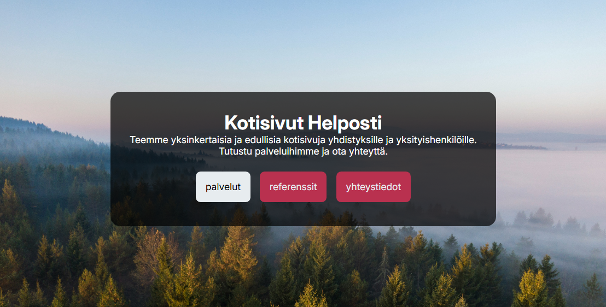
Etusivun määritykset ovat nyt valmiit, siirrätään määrittelemään muiden sivujen ulkoasua.
-
Muilla sivuilla on vielä koko dokumentille määritelty taustaväri (punainen). Muutetaan taustavärit seuraavksi neutraaleimmiksi. Kopioi seuraavat rivit edellisten alapuolelle.
section { background-color: var(--neutral); color: var(--neutral-darkest); } section:nth-child(odd) { background-color: var(--neutral-lightest); }Ensimmäinen sääntö määrittelee jokaisen
section-elemementin taustaväriksi vaalean värisävyn ja tekstiväriksi tumman värisävyn.Toinen sääntö muuttaa joka toisen
section-elementin taustaväriksi valkoisen. Tällä tavalla eri sivut saadaan eroteltua visuaalisesti toisistaan.
-
Sivun tekstiä on tällä hetkellä raskas lukea, koska tekstirivit ovat lähtökohtaisesti liian pitkiä. Säädetään seuraavaksi tekstirivin pituutta. Kopioi seuraavat rivit edellisten alapuolelle.
header p, section p { max-width: var(--max-width); margin: 0.5em 0; }Tämä määrittelee etusivun ja muiden sivun tekstikappale-elementtien maksimileveyden sekä niiden ylä- ja alapuolelle pienen välin.
-
Sivuston otsikkoelementit kaipaavat seuraavaksi muokkaamista. Kopioi seuraavat rivit edellisten alapuolelle.
h1 { font-size: 300%; margin: 1em 0 0.5em 0; } h2 { font-size: 250%; margin: 1em 0; }Tämä asettaa
h1- jah2-elementtien tekstinkoon ja marginaalit. Tämä muutti etusivun pääotsikon lisäksi alasivun yläotsikot.
-
Seuraavaksi muokataan palvelut-osiossa olevat palvelut omiksi kokonaisuuksiksi. Kopioi ensin seuraavat rivit muiden jatkoksi.
.palvelut { display: flex; justify-content: center; flex-wrap: wrap; max-width: calc(var(--max-width) * 1.5); margin-top: 1em; }Tässä yhteydessä käytetään ensimmäisen kerran niin sanottua luokkaselektoria. Luokkaselektorilla sääntö voidaan kohdistaa niihin elementteihin, jotka on määritelty kuulumaan tiettyyn luokkaan
class-määritteellä. CSS-tiedostossa selektorin alussa on.-merkki ja välittömästi sen perässä luokan nimi. Jos esimerkiksi elementille on määriltelty luokan nimeksiyhteystiedot, niin silloin siihen viitataan selektorilla.yhteystiedot.Tämä sääntö määrittelee
palvelut-nimiselle elementtiluokan hyödyntämään Flexbox-asettelua. Aikaisemmista poiketen määritellään sisältö keskittymään vaakasuunnassa ja tarvittaessa rivittymään.Tämän lisäksi elementi maksimileveydeksi määritellään puolitoista kertaa tekstikappaleen maksimileveys. Koska palvelut tullaan asemoimaan useampi rinnakkain, niin silloin alueen maksimileveys voi olla leveämpi luettavuuden siitä kärsimättä.
Tällä säännöllä ei ole isoa vaikutusta sivunäkymään. Jatketaan palveluiden ulkoasun määrittelyä. Kopioi seuraavat rivit edellisten alapuolelle.
.palvelut > div { background-color: var(--primary-dark); color: var(--neutral-lightest); margin: 0.5em; padding: 1.5em; border-radius: var(--border-radius); max-width: calc(var(--max-width) * 0.375); }Tämä sääntö kohdistuu välittämästi
palvelut-luokkaelementin alla oleviindiv-elementteihin. Tämä asettaa niiden taustaväriksi tumman sävyn ja tekstiväriksi vaalean sävyn. Tämän lisäksi asetetaan yksittäisen laatikon marginaalit, täyte ja kulmien pyöreys. Marginaaleilla saadaan erotettua laatikot toisistaan, täytteellä laatikon sisälle hieman tyhjää reunoille.Laatikon maksimileveydeksi asetetaan laskukaavalla laskettu arvo, joka on 37,5% tekstikappaleen maksimileveydestä. Tämä varmistaa, että täydessä sivunleveydessä laatikoita sijoittuu kolme rinnakkain.
Asetetaan vielä yksittäisen laatikon otsikolle pienet marginaalit. Kopioi seuraavat rivit edellisten alapuolelle.
.palvelut h3 { margin: 0.8em 0; }Samalla korjataan HTML-tiedostossa Hakukoneoptimointi (SEO) -laatikossa oleva hakukoneoptimointipalveluiden-sana lyhyemmäksi. Sivuston ulkoasua on hyvä tarkkailla pitkin kehitysprosessia ja testailla sitä useilla eri selainikkunan leveyksillä.
Palvelut-osion ulkoasu on nyt määritelty. Siirrytään muokkaamaan seuraavaa osiota.
-
Referenssit osion esimerkkien ulkoasu määritellään hyvin samalla tavalla kuin Palvelut-osion ulkoasu. Aloita kopioimalla seuraavan rivit edellisten jatkoksi.
.referenssit { display: flex; justify-content: center; flex-wrap: wrap; }Tässäkin hyödynnetään luokkaselektoria, joka kohdistaa säännön
referenssit-elementilleluokalle. Samalla tavalla kuin Palvelut-osiossa, myös tässä referenssit sijoitetaan keskelle vaakaan ja rivitetään tarvittaessa.Tämä asetus ei vielä muuttanut osion ulkoasua. Määritellään seuraavaksi yhden laatikon ulkoasu. Kopioi seuraavat rivit edellisten jatkoksi.
.referenssit > div { background-color: var(--primary-light); border-radius: var(--border-radius); margin: 1em; padding: 1.5em; max-width: calc(var(--max-width) * 0.5); }Tämä sääntö kohdistuu välittömästi
referenssit-luokan alla oleviindiv-elementteihin. Sille määritellään taustaväri, kulman pyöreys, marginaalit ja täyte. Näiden lisäksi yhden laatikon maksimileveydeksi asetetaan puolet tekstikappaleen maksimileveydestä.
Referenssikuvat pakottavat sivun leveämmäksi kuin mitä toivotaan, se korjataan seuraavaksi määritelemällä referenssilaatikon sisällön ulkoasu. Kopioi seuraavat rivit edellisten alapuolelle.
.referenssit h3 { color: var(--neutral-darkest); font-size: 150%; margin-bottom: 0.5em; } .referenssit p { margin: 1em 0; } .referenssit img { width: 100%; }Nämä asettavat referenssilaatikon elementeille seuraavat asiat.
h3-otsikolle värin, fonttikoon ja alamarginaalin.p-tekstikappaleelle ylä- ja alamarginaalin.img-kuvan käyttämään 100% sille annetusta tilasta. Tämä skaalaa kuvan oikeaan kokoon.
-
Referenssit-osion ulkoasu on nyt valmis, siirrytään muokkaamaan Yhteystiedot-osion ulkoasua. Tämän osion ulkoasu on aika pitkälle määritelty aikasempien asetusten pohjalta. Korjataan ainoastaan osoitteen kursivointi ja puhelinumeron tekstiväri. Kopioi seuraavat rivit edellisten alapuolelle.
{kind=link}
{kind=link}
{kind=link}
{kind=link}
{kind=link}
{kind=link}
{kind=link}
{kind=link}
{kind=link}
{kind=link}
{kind=link}
{kind=link}
{kind=link}
{kind=link}
{kind=link}
address {
font-style: normal;
font-weight: 600;
margin-top: 1em;
}
address a {
text-decoration: none;
color: var(--primary-dark)
}
Tämä asettaa osoitteen tekstityyliksi normaalin (eli poistaa kursivoinnin), tekstin paksuudeksi lihavoinnin ja pienen ylämarginaalin. Lisäksi linkistä poistetaan alleviivaus ja tekstiväriksi asetetaan tumman punainen.
{kind=link}
-
Viimeisenä vaiheena on alaotsakkeen eli
footer-elementin ulkoasun määrittely. Kopioi seuraavat rivit edellisten alapuolelle.footer { font-size: 80%; padding: 2em; text-align: center; } footer p { margin: 0.5em; }Nämä asetukset määrittelevät alaotsakkeen fonttikoon, täytteen ja keskittää tekstin keskelle. Tämän lisäksi alaotsakkeessa oleville tekstikappaleille määritellään pieni marginaali.
-
Nyt sivuston ulkoasu on kokonaisuudessaan valmis ja se näyttää seuraavanlaiselta:
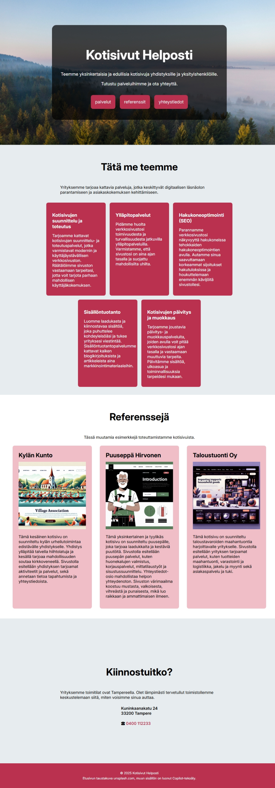
JavaScript
Verkossa on runsaasti lähdemateriaalia tarjolla. Hyvä vaihtoehto on esimerkiksi sivusto W3Schools Javascript ja vaihtoehtoisesti vaikka maksutta saatavilla olevaa kirja JavaScript From Zero to Hero (hieman nurinkurisesti vasta luku 4 käsittelee alkeita, hyppää siis neljänteen lukuun). Linkki on toisinaan hyvin hidas, ole siis kärsivällinen.
Erinomainen tietolähde on myös ohjelmistokehittäjien yhteisö Stack Overflow, jossa hakutoiminnon avulla voi etsiä vastauksia kysymyksiin ja jos kyseisestä asiasta ei löydy tietoja, voi lisätä oman kysymyksen. Vastaava ja kenties vielä suositumpi on Stack Exchange, johon kannattaa myös tutustua.
Tämän materiaalin tavoite
Tämä itseopiskelumateriaali tarjaa vain välttämättömimmän sisällön ohjelmoinnin perusteisiin, jotta opiskelija pääsee omatoimisesti alkuun. Jos et ole aiemmin koodannut, sinun pitää alkuvaiheessa sietää sitä epävarmuuden tunnetta, että et vielä tiedä tarpeeksi. Jostain pitää aloittaa ja lähteä hitaasti etenemään ja tämän materiaalin puitteissa sivuutamme paljon erilaisia hienouksia tai oikopolkuja ja keskitymme pedagogisesti selkeimpiin koodiratkaisuihin. Vähä vähältä uutta tietoa ja uusia taitoja alkaa kertyä.
Tässä JavaScript-osiossa olevat harjoitustehtävät ovat vain itseopiskelua varten ja tarkoitettu aivojumpaksi. Näitä harjoituksia ei arvioida eikä niistä saa pisteitä valintaprosessiin. Siitä huolimatta ne voivat olla oppimisen kannalta arvokkaita ja tärkeitä.
Älä huoli, vaikka JavaScript tuntuisi aluksi vaikealta – kaikki osaajat ovat joskus olleet samassa tilanteessa. Jokainen pieni askel vie sinua eteenpäin, ja pian huomaat ymmärtäväsi yhä enemmän. Ole utelias, kokeile rohkeasti ja muista: virheet ovat paras tapa oppia. Tämä on alku matkallesi luomaan omia verkkosovelluksia – ja se on aika siisti juttu!
Jos haluat käyttää tekoälyä hyväksesi, käytä sitä kuin se olisi opettaja: tee tekoälylle kysymyksiä, jotka alkavat sanalla "miksi":
- miksi tästä rivistä tulee syntax error
- miksi lauseeni ei tulosta mitään
- miksi saan virheilmoituksen 'unexpected token else'
Tällöin oma osaaminen karttuu nopeasti. Huonoin vaihtoehto on (ja tällä kurssilla se ei ole sallittu!) pyytää tekoälyä ratkaisemaan tehtäviä sinun puolestasi. Tällöin omaa oppimista ei tapahdu lainkaan.
Ohjelmoinnin peruskäsitteet
Ohjelmointi on tapa antaa tietokoneelle tarkkoja ohjeita siitä, mitä sen tulee tehdä. Ohjelmat koostuvat yksittäisistä käskyistä, jotka suoritetaan yksi kerrallaan ennalta määrätyssä järjestyksessä. Näiden käskyjen avulla tietokone voi käsitellä tietoa, ratkaista ongelmia, suorittaa toistuvia tehtäviä ja reagoida käyttäjän toimintaan. Ohjelmointi on eräänlaista viestintää ihmisen ja koneen välillä, mutta kone ymmärtää vain tarkasti määriteltyä kieltä – ohjelmointikieltä. Tämän vuoksi ohjelmointi vaatii loogista ajattelua ja huolellista ohjeiden laatimista.
Useimpien ohjelmien perusrakenne noudattaa samaa yksinkertaista periaatetta: tietoja otetaan vastaan, niitä käsitellään, ja lopuksi tulokset näytetään käyttäjälle tai tallennetaan jonnekin. Näitä kolmea osaa kutsutaan nimillä syöte, prosessointi ja tuloste. Tämä kolmijako auttaa hahmottamaan ohjelman kulun ja sen, miten eri osat liittyvät toisiinsa.
Syöte eli input
Syöte tarkoittaa tietoa, jota ohjelma saa ulkopuolelta. Tämä tieto voi tulla esimerkiksi käyttäjältä, joka kirjoittaa jotain näytölle ilmestyvään tekstikenttään, tai se voi olla tiedostossa oleva tieto, jonka ohjelma lukee automaattisesti. Ilman syötettä ohjelma toimisi aina samalla tavalla eikä voisi reagoida tilanteisiin tai käyttäjän tarpeisiin.
Käsittely eli prosessointi
Kun tiedot on saatu syötteenä, ohjelma siirtyy seuraavaan vaiheeseen: käsittelyyn eli prosessointiin. Tässä vaiheessa ohjelma tekee varsinaisen työnsä. Se voi laskea, vertailla, muuntaa tai muuten käsitellä syötetietoja logiikan mukaisesti. Prosessointi on ohjelman ydin – siinä tapahtuu se, mitä varten ohjelma on kirjoitettu. Esimerkiksi laskinohjelmassa tämä vaihe tarkoittaa laskutoimituksen suorittamista käyttäjän syöttämien lukujen perusteella.
Tulostus eli output
Kun tiedot on käsitelty, ohjelma siirtyy viimeiseen vaiheeseen eli tulostukseen. Tällöin ohjelma antaa käyttäjälle jotain näkyvää palautetta – esimerkiksi näyttää laskutoimituksen tuloksen, piirtää kuvaajan tai tallentaa tuloksen tiedostoon. Tuloste on ohjelman tapa kertoa, mitä tapahtui. Se voi olla yhtä yksinkertainen kuin teksti "Valmis!" ruudulla, tai monimutkaisempi esitys tuloksista, esimerkiksi tilasto tai raportti.
Yhteenvetona voi sanoa, että ohjelma on joukko ohjeita, joiden avulla tietokone osaa ottaa vastaan tietoa, käsitellä sen halutulla tavalla ja näyttää tai tallentaa tulokset. Tämä kolmiosainen rakenne – syöte, prosessointi ja tuloste – on läsnä melkein jokaisessa ohjelmassa, yksinkertaisimmista laskimista monimutkaisiin verkkosovelluksiin. Ohjelmointi on siis ennen kaikkea järjestelmällistä ongelmanratkaisua, jossa kone tekee työn, mutta ihminen määrittää säännöt.
Koodilause
Koodilause on ohjelmointikielessä yksi yksittäinen käsky tai toimenpide, jonka tietokone suorittaa. Jokainen koodilause kertoo tietokoneelle, mitä se tekee seuraavaksi – esimerkiksi luo muuttujan, laskee jotain, näyttää tietoa tai muuttaa tietoa. Lauseita suoritetaan yleensä ylhäältä alas, yksi kerrallaan, siinä järjestyksessä kuin ne on kirjoitettu.
Koodilause muistuttaa tavallisen kielen virkettä: siinä on aina jokin toiminto ja usein myös kohde, johon toiminto kohdistuu. Esimerkiksi lause "Anna Maijalle omena" kertoo, kuka saa mitä. Vastaavasti ohjelmointikielen lause voi sanoa: "laske yhteen nämä luvut ja tallenna tulos".
Miten testaan nopeasti JavaScript-lauseen?
Alla on pieni video, jossa esitellään selaimesta löytyvän konsolin käyttöä lyhyesti.
Klikkaa yllä olevaa kuvaa nähdäksesi videon.
Muutamia esimerkkejä JavaScriptin koodilauseista:
let nimi = "Anna"Tämä lause luo muuttujan nimeltä
nimija tallentaa siihen tekstin"Anna".let summa = 5 + 3Tässä lasketaan yhteen luvut 5 ja 3, ja tulos (eli 8) tallennetaan muuttujaan
summa.console.log("Hei maailma!")Tämä lause näyttää tekstin selaimen konsolissa. Konsoliin tulostaminen on yleinen tapa tarkistaa, mitä ohjelma tekee.
luku++Tämä lause kasvattaa yhdellä kokonaisluvun sisältävää muuttujaa nimeltä
luku. Se on lyhyempi tapa kirjoittaaluku = luku + 1.Jokainen näistä esimerkeistä on yksi itsenäinen koodilause. Ohjelma koostuu useista tällaisista lauseista, jotka muodostavat yhdessä toimivan kokonaisuuden. Aivan aluksi tärkeää on oppia lukemaan ja kirjoittamaan näitä lauseita selkeästi ja loogisesti.
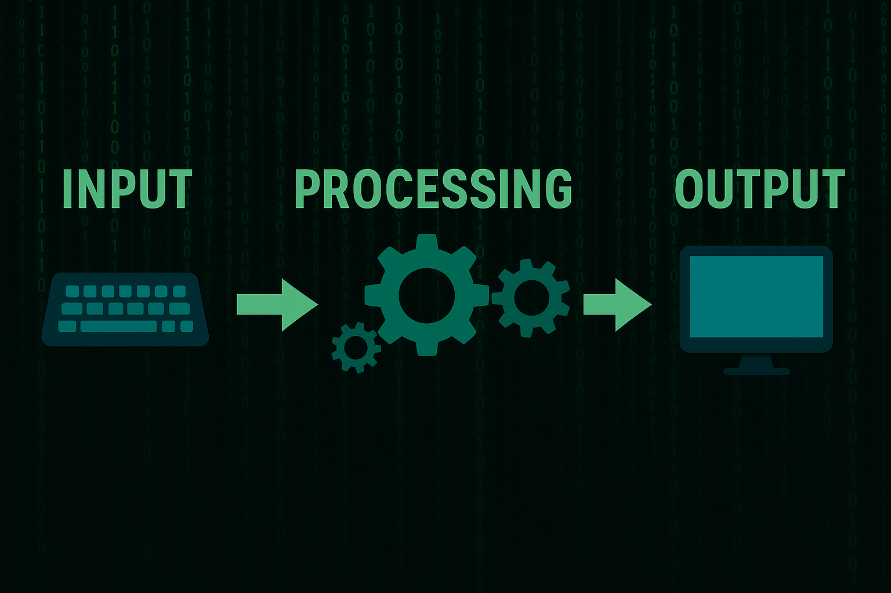
Muuttujat ja tietotyypit
Muuttujat
Muuttujat ovat säilytyspaikkoja arvoille eli datalle. Ne mahdollistavat sen, että koodisi voi käsitellä vaihtelevaa tietoa – kuten käyttäjän nimeä tai laskun summaa. Tieto pysyy muuttujassa tallessa koko ohjelman suorituksen ajan.
Lisätietoa ja harjoituksia löytyy esimerkiksi sivustosta W3Schools Variables.
Ohjelmoija voi halutessaan muuttaa muuttujan arvoja ohjelman suorituksen aikana vaikka monta kertaa, esimerkiksi pelissä voi pelaajan pistemäärä olla tallennettuna muuttujaan ja aina kun pelaaja onnistuu jossain uudessa asiassa, hänen piste-muuttujansa arvoa kasvatetaan.
Muuttuja esitellään ennen sen ensimmäistä käyttöä varatulla komentosanalla
let. Koodi toimii valitettavasti myös, vaikka let-komennon jättää pois, mutta tällöin muuttujasta tulee vahingossa ns. globaali. Muista siis esitellä aina muuttuja oikealla tavalla.JavaScriptin koodilause päättyy joko rivinvaihtoon (ENTER) tai puolipisteeseen. Nykytavan mukaan puolipisteitä ei enää käytetä, mutta niiden käyttö ei ole virhe. Alla olevat kaksi koodilausetta päättyvät puolipisteeseen.
let nimi = "Anna"; let ika = 16;Seuraavat koodirivit päättyvät rivinvaihtoon ilman puolipistettä. Huomaa, desimaalierotin on desimaalipiste eikä suomen kielen kieliopin mukainen pilkku. Kolmannella rivillä
hinta-muuttujaan tallennetaan uusi arvo, joka korvaa vanhan. Vain viimeisin arvo jää jäljelle. Myöskään muuttujaa ei kolmannella rivillä enää uudelleen esitellä, koska se onlet-komennolla esitelty jo aiemmin.let hinta = 5.95 let alePros = 0.2 hinta = 4.76Muistettavaa muuttujista:
- Käytä kuvaavia nimiä (ika, etunimi) – ei pelkkiä kirjaimia (x, y).
- Muuttujan nimi ei saa sisältää välilyöntejä.
- Vältä muuttujien nimeämisessä skandinaavisia kirjaimia, osa työkaluista tai kirjastoista voi toimia väärin
- Käytä camelCase-tyyliä: esim.
kokoNimitai alaviivoja esim.ale_prosenttikun muuttujan nimi on pitkä yhdyssana.
Perustietotyypit (primitiiivit)
Muuttujille voi antaa eri tyyppisiä arvoja. JavaScript tunnistaa tyypin automaattisesti.
Tärkeimmät tietotyypit:
Tyyppi Esimerkki Selitys String "Moikka" Teksti (merkkijono) Number 42, 3.14 Luku (kokonais- tai desimaali) Boolean true, false Totuusarvo (kyllä/ei) Undefined muuttuja ilman arvoa Esim. let x Null null Tarkoituksella "tyhjä" let teksti = "Hei" let luku = 100 let totuus = true let eiMaaritetty let tyhja = nullTekstin kirjoitus
Koska tekstimuotoinen data voi sisältää kaikkia merkkejä, myös välilyöntejä ja erikoismerkkejä, tekstimuotoinen data on ympäröitävä erotinmerkeillä, joita on kolmea tyyppiä. Voit käyttää tekstiin heittomerkkejä eli 'hipsuja', lainausmerkkejä tai backtick-merkkejä:
let eka = 'Hei' let toka = "Moi" // tämä on kommentti let kolmas = `Terve, ${eka}` // muuttujan upotus tulostukseenKommentit ja "kaltevat" viivat
Koodin joukkoon voi lisätä yllä olevan esimerkin mukaan kommentteja, eli ohjelmoijan omia muistiinpanoja. Ne eivät vaikuta ohjelman toimintaan vaan ovat pelkästään ihmisen luettavaksi tarkoitettuja huomautuksia tai vastaavaa. Kommentti aloitetaan kirjoittamalla peräkkäin kaksi kauttaviivaa
// tämä on kommentti. Kauttaviivat ovat eri merkki, kuin seuraavassa esiteltävät kenoviivat, jotka osoittavat ikään kuin kello 11:een, kun taas kauttaviivat osoittavat kello 1:een.Muista: kauttaviiva
/ja kenoviiva\ovat eri merkki ja saavat aikaan eri toimintoja. Seuraavaksi eräs kenoviivan käyttötarkoitus, eli escape-merkit.Escape-merkit ovat erikoismerkkejä, joita käytetään ohjelmoinnissa, kun halutaan lisätä koodiin merkkejä, joita ei voi kirjoittaa suoraan sellaisenaan. Näitä merkkejä tarvitaan, koska jotkut merkit JavaScriptissä (ja muissa kielissä) tulkitaan erikoistarkoitukseen, eikä niitä voi käyttää normaalina tekstinä ilman erityistä käsittelyä.
Escape-merkki on kenoviiva
\, jota seuraa jokin muu merkki. Tämä yhdistelmä kertoo JavaScriptille: "älä käsittele seuraavaa merkkiä tavalliseen tapaan, vaan tulkitse se erikoismerkkinä".Muutama Escape-merkki:
- \' ja \" sallivat kirjoittaa lainausmerkin osaksi merkkijonoa
- \n tekee rivinvaihdon
- \\ lisää kenoviivan
Esimerkki merkkijonosta, joka sisältää Escape-merkkejä:
let eka = "Täällä on kenoviiva \\ ja lainausmerkki \" tekstin joukossa."Ylläolevan muuttujan tulostus tuottaa tällaisen rivin:
Täällä on kenoviiva \ ja lainausmerkki " tekstin joukossa.Kun haluat tulostaa tekstin kahdelle riville, lisää haluamaasi kohtaan \n.
let esimerkki = "Hei, mitä kuuluu?\nKaikki hyvin."Tietotyypin tarkistus
Voit tarkistaa muuttujan tietotyypin komennolla typeof.
let luku = 10 console.log(typeof luku) // "number"Tyyppimuunnokset
JavaScript muuntaa joskus tyyppejä automaattisesti. Tämä voi yllättää:
let a = 2 let b = "2" console.log(a + b) // "22" (yhdistää tekstiksi)Voit myös muuntaa tyyppejä itse:
Number("123") // 123 String(456) // "456" Boolean("") // falseYhteenveto
- Käytä let muuttujien luomiseen.
- Muista tietotyypit: teksti, luku, tosi/epätosi.
- Kirjoita kuvaavia muuttujanimiä.
- Tarkista tyyppi typeof-komennolla.
- Tyyppimuunnokset voivat aiheuttaa yllätyksiä.
Esimerkit
JavaScript-koodi kirjoitetaan HTML-sivulle
<script>-elementin sisään. Tämä tarkoittaa, että voit lisätä koodin suoraan HTML-tiedostoon, ja selain suorittaa sen, kun sivu avataan. Kaikki JavaScript kirjoitetaan<script>- ja</script>-tägien väliin. Se voi olla sivun alussa, lopussa tai erillisessä tiedostossa.Missä kohtaa HTML:ää
<script>-elementti voi olla?<script>-elementti voidaan sijoittaa kahteen yleiseen paikkaan:<head>-elementin sisälle<body>-elementin sisälle
Usein
<script>sijoitetaan<body>-elementin sisään ja sen loppuun. Kun selain lukee HTML-tiedostoa ylhäältä alas, se lukee ja suorittaa koodin heti kun se kohtaa sen. Jos JavaScript yritetään suorittaa ennen kuin sivun sisältö on ehtinyt latautua (esimerkiksi ennen kuin elementit kuten<p id="tulos">ovat olemassa), koodi ei välttämättä toimi oikein – selain ei vielä "näe" niitä elementtejä.Siksi on hyvä tapa sijoittaa
<script>-elementti juuri ennen sivun rungon lopettavaa<body>-tagia,Alla on muutamia esimerkkejä ja niiden jälkeen harjoituksia, joiden avulla voit itse kokeilla miten koodaaminen onnistuu.
Esimerkki 1
Luo muuttuja nimeltä
ilmoitus, jonka arvo on"Tervetuloa koodauskurssille!.Suoritusohje: Tulosta se alert-ikkunassa. Tee koodistasi kokonainen html-tiedosto ja tallenna se nimellä
esimerkki1.html. Avaa luomasi tiedosto selaimessa.esimerkki1.html:
<!DOCTYPE html> <html> <head> <meta charset="UTF-8"> <title>Esimerkki 1</title> </head> <body> <script> let ilmoitus = "Tervetuloa koodauskurssille!" alert(ilmoitus) </script> </body> </html>Esimerkki 2
Luo muuttuja
oppilas, jonka arvo on"Lauri", ja muuttujapisteet, jonka arvo on95. Tulosta console.log-komennolla tekstiOppilas: Lauri, Pisteet: 95esimerkki2.html:
<!DOCTYPE html> <html> <head> <meta charset="UTF-8"> <title>Esimerkki 2</title> </head> <body> <script> let oppilas = "Lauri" let pisteet = 95 console.log("Oppilas: " + oppilas + ", Pisteet: " + pisteet) </script> </body> </html>Esimerkki 3
Luo muuttuja
ekaLuku, jonka arvo on12, jatokaLuku, jonka arvo on8. Laske niiden summa ja näytä se sivulla HTML-elementissä, jonka id ontulos.<!DOCTYPE html> <html> <head> <meta charset="UTF-8"> <title>Esimerkki 3</title> </head> <body> <p id="tulos"></p> <script> let ekaLuku = 12 let tokaLuku = 8 let yhteensa = ekaLuku + tokaLuku document.getElementById("tulos").innerHTML = "Lukujen yhteissumma on: " + yhteensa </script> </body> </html>Harjoitukset
Harjoitukset ov tarkoitettu itseopiskeluun. Yritä ratkaista annetut harjoitustehtävät. Jos haluat, saat käyttää apunasi tekoälyä siinä muodossa, että teet kysymyksiä, jotka alkavat sanalla "miksi."
Näitä harjoituksia ei arvioida eikä niistä saa pisteitä valintaprosessiin, mutta niiden kautta oppii uutta, jota tarvitset myöhemmin tämän hakukurssin varsinaisessa arvioitavassa näyttötehtävässä.
Harjoitus 1
Luo muuttuja nimeltä
tervehdys, jonka arvo on"Hei maailma!". Tulosta se alert-ikkunassa.Harjoitus 2
Luo muuttuja
nimi, jonka arvo on"Emma", ja muuttujaika, jonka arvo on23. Tulosta console.log-komennolla tekstiNimi: Emma, Ikä: 23Harjoitus 3
Luo muuttuja
luku1, jonka arvo on5, jaluku2, jonka arvo on3. Laske niiden summa ja näytä se sivulla HTML-elementissä, jonka id onsumma.Harjoitus 4
Luo muuttuja
teksti, jonka arvo on"JavaScript on kivaa"ja näytä se HTML-elementissä, jonka id onviesti.Harjoitus 5
Luo muuttuja
totuusarvollatrueja näytä sen tietotyyppi HTML-elementissä, jonka id ontyyppi.Operaattorit
Operaattorit ovat symboleita, joilla voidaan tehdä laskutoimituksia ja muokata muuttujien arvoja. Ne ovat ohjelmoinnin perusrakennuspalikoita, aivan kuten matikassa + ja -.
Lisätietoja ja lisäharjoituksia löytyy esimerkiksi sivustosta W3Schools Operators.
Laskuoperaattorit
Yksi tärkeimmistä operaattoreista on sijoitusoperaattori jota merkitään yhdellä yhtysuuruusmerkillä (=). Se on tavallaan suora määräys tietokoneelle, että sijoita merkin oikealla puolella oleva arvo vasemmalla olevaan muuttujaan. Muista, aina oikealta vasemmalle.
Näitä esimerkkejä oli jo aiemmin, mutta tässä vielä kertauksena:
let nimi nimi = "Eino" let ika = 35JavaScript tukee kaikkia tuttuja peruslaskuja:
Yhteenlasku (+)
- Numeroiden laskemiseen:
let a = 10 + 5 // 15- Tekstien yhdistämiseen (yhdistely eli katenointi yhdistää merkkijonot):
let tervehdys = "Hei " + "Maija" // "Hei Maija"Vähennyslasku (-)
- Vähentää luvut normaalisti.
let erotus = 20 - 4 // 16Kertolasku (*)
- Kertoo kaksi lukua.
let tulo = 6 * 3 // 18Jakolasku (/)
- Jakaa luvut.
let jako = 30 / 5 // 6Potenssi (**)
- Korottaa luvun potenssiin.
let potenssi = 2 ** 4 // 16 (eli 2*2*2*2)Jakojäännös (modulo) (%)
- Palauttaa jakolaskun jakojäännöksen
let jakojaannos = 10 % 3 // 1Muuttujan arvon muuttaminen
Kasvatus yhdellä (++)
- Lisää muuttujan arvoon yksi:
let luku = 4 luku++ // nyt luku on 5Vähennys yhdellä (--)
- Vähentää yhdellä:
let luku = 4 luku-- // nyt luku on 3Toimintojen järjestys
Operaattoreilla on tietty laskujärjestys (kuten matikassa):
- Sulut ()
- Potenssi **
- Kertolasku, jakolasku ja jakojäännös *, /, %
- Yhteen- ja vähennyslasku +, -
Esimerkiksi:
let tulos = (2 + 3) * 4 // tulos on 20, koska sulut lasketaan ensinYhteenveto
- Käytä operaattoreita laskemiseen ja tekstin yhdistämiseen.
- + toimii sekä lukujen että tekstin kanssa.
- Modulo (%) kertoo, mitä jää jäljelle jaossa.
- ++ ja -- ovat lyhenteitä yhden lisäämiselle tai vähentämiselle.
- Käytä sulkuja selkeyttämään laskujen järjestystä.
Harjoitukset
harjoitukset ovat vapaaehtoisia eikä niitä arvioida. Niissä on kuitenkin tärkeitä opiskeltavia asioita, jonka vuoksi niiden suorittaminen on erittäin suositeltavaa.
Harjoitus 6
Laske kahden luvun summa ja näytä tulos sivulla (innerHTML-tekniikkla)
Harjoitus 7
Vähennä yksi luku toisesta ja tulosta tulos alert-ikkunassa.
Harjoitus 8
Kerro kaksi lukua ja näytä tulos console.log-komennolla.
Harjoitus 9
Laske jakojäännös kahdesta luvusta ja näytä tulos HTML:ssä.
Harjoitus 10
Lisää muuttujaan yksi ja näytä uusi arvo innerHTML:ssä.
Harjoitusten mallivastaukset
<!DOCTYPE html> <html> <head> <meta charset="UTF-8"> <title>Harjoitus 6 – Summa</title> </head> <body> <p id="summa"></p> <script> let luku1 = 7 let luku2 = 5 let summa = luku1 + luku2 document.getElementById("summa").innerHTML = "Summa on: " + summa </script> </body> </html><!DOCTYPE html> <html> <head> <meta charset="UTF-8"> <title>Harjoitus 7 – Vähennys</title> </head> <body> <script> let luku1 = 10 let luku2 = 4 let erotus = luku1 - luku2 alert("Erotus on: " + erotus) </script> </body> </html><!DOCTYPE html> <html> <head> <meta charset="UTF-8"> <title>Harjoitus 8 – Kertolasku</title> </head> <body> <script> let luku1 = 6 let luku2 = 3 let tulo = luku1 * luku2 console.log("Tulo on: " + tulo) </script> </body> </html><!DOCTYPE html> <html> <head> <meta charset="UTF-8"> <title>Harjoitus 9 – Jakojäännös</title> </head> <body> <p id="mod"></p> <script> let luku1 = 13 let luku2 = 5 let jakojaannos = luku1 % luku2 document.getElementById("mod").innerHTML = "Jakojäännös on: " + jakojaannos </script> </body> </html><!DOCTYPE html> <html> <head> <meta charset="UTF-8"> <title>Harjoitus 5 – ++ Operaattori</title> </head> <body> <p id="luku"></p> <script> let pisteet = 10 pisteet++ document.getElementById("luku").innerHTML = "Pisteet nyt: " + pisteet </script> </body> </html>Vertailuoperaattorit
JavaScriptissä on operaattoreita, joita käytetään vertaamaan arvoja keskenään. Näitä kutsutaan vertailuoperaattoreiksi (comparison operators).
Vertailun tuloksena saadaan tosi (true) tai epätosi (false) arvo.
Tärkeimmät vertailuoperaattorit
Operaattori Selitys Esimerkki Tulos == Onko arvot yhtäsuuret? a == 6 false != Onko arvot erisuuret? a != 6 true > Onko suurempi kuin? a > 4 true < Onko pienempi kuin? a < 4 false >= Onko suurempi tai yhtä suuri? a >= 5 true <= Onko pienempi tai yhtä suuri? a <= 4 false Esimerkkejä vertailuista
Alla on kolme yksinkertaista esimerkkiä, jotka voit avata selaimessa ja nähdä tulokset suoraan:
esimerkki4.html
<!DOCTYPE html> <html> <head> <meta charset="UTF-8"> <title>Vertailuoperaattorit – Esimerkki 4</title> </head> <body> <p id="tulos1"></p> <script> let a = 5 let vertailu = (a == 5) document.getElementById("tulos1").innerHTML = "Onko a yhtä kuin 5? " + vertailu </script> </body> </html>esimerkki5.html
<!DOCTYPE html> <html> <head> <meta charset="UTF-8"> <title>Vertailuoperaattorit – Esimerkki 5</title> </head> <body> <p id="tulos2"></p> <script> let a = 5 let vertailu = (a < 4) document.getElementById("tulos2").innerHTML = "Onko a pienempi kuin 4? " + vertailu </script> </body> </html>esimerkki6.html
<!DOCTYPE html> <html> <head> <meta charset="UTF-8"> <title>Vertailuoperaattorit – Esimerkki 6</title> </head> <body> <p id="tulos3a"></p> <p id="tulos3b"></p> <p id="tulos3c"></p> <script> let a = 5 document.getElementById("tulos3a").innerHTML = "a != 6 on " + (a != 6) document.getElementById("tulos3b").innerHTML = "a >= 5 on " + (a >= 5) document.getElementById("tulos3c").innerHTML = "a <= 4 on " + (a <= 4) </script> </body> </html>Ohjausrakenteet ja lohko
Ohjausrakenteet
Ohjausrakenteet ovat ohjelmoinnissa keinoja hallita, mitä osia koodista suoritetaan ja missä järjestyksessä. Ne mahdollistavat esimerkiksi ehtojen tarkistamisen ja toistuvien toimintojen suorittamisen. Ilman ohjausrakenteita ohjelma suorittaisi koodirivit vain ylhäältä alas, yksi kerrallaan, ilman mahdollisuutta valintoihin tai toistoihin.
Lisätietoja ja lisäharjoituksia löytyy esimerkiksi seuraavista sivustoista:
Lohko
Lohko tarkoittaa joukkoa koodirivejä, jotka kuuluvat yhteen. Lohko merkitään JavaScriptissä aaltosulkujen
{ }sisään. Esimerkiksi if-ehtolauseessa lohko kertoo, mitä tapahtuu, jos ehto toteutuu.Tyypillisesti eri ohjausrakenteet ovat alla olevan muotoisia:
ohjauskomento (ehto) { koodilause koodilause koodilause }Yllä olevassa esimerkissä "ohjauskomento" voisi olla esimerkiksi
whiletaiif. Ohjauskomennon jälkeen on normaalisti suluissa oleva ehto (tai muun tyyppinen lauseke, kutenfor-rakenteessa), joka määrää, suoritetaanko kyseinen lohko.Lohko suoritetaan aina kokonaisuudessaan tai jätetään kokonaan väliin – yksittäisiä lauseita ei hypitä yli. Näin lohko sitoo useamman lauseen yhdeksi ehjäksi kokonaisuudeksi.
Esimerkit
if-else (ehtolause):
Alla olevassa if-else-rakenteessa tarkistetaan, onko muuttujan
numeroarvo suurempi kuin 0. Jos ehtonumero > 0on tosi, suoritetaan lohkossa oleva koodi ja tulostetaan "Luku on positiivinen". Jos ehto ei ole tosi, siirrytään else-haaraan ja tulostetaan "Luku ei ole positiivinen". Tämä rakenne on hyödyllinen silloin, kun halutaan tehdä eri asioita tilanteen mukaan. Ohjelma siis tekee joko/tai -päätöksiä annetun ehdon perusteella.let numero = 5; if (numero > 0) { console.log("Luku on positiivinen"); } else { console.log("Luku ei ole positiivinen"); }while (toistolause, kunnes ehto ei enää pidä paikkaansa):
While-rakenteessa ohjelma toistaa lohkon sisällä olevaa koodia niin kauan kuin annettu ehto on tosi. Tässä esimerkissä ehto on
i < 3, eli toisto jatkuu niin kauan kuin muuttujaion pienempi kuin 3. Jokaisella kierroksella tulostetaan "Toisto numero: " ja muuttujaniarvo. Lohkon viimeisellä rivilläi-muuttujaa kasvatetaan yhdellä, jotta toisto lopulta päättyy. Tämä rakenne sopii tilanteisiin, joissa ei välttämättä tiedetä etukäteen montako kertaa toistoa tarvitaan.let i = 0; while (i < 3) { console.log("Toisto numero: " + i); i++; }for (toistolause, jolla toistoa ohjataan laskurimuuttujalla):
For-rakenteessa toisto tapahtuu ennalta määrätyn määrän kertoja. Esimerkissä toisto alkaa, kun muuttuja
ion 0, ja jatkuu niin kauan kuini < 5. Jokaisella kierroksella tulostetaan "Luku: " jai-muuttujan arvo. Toiston lopussaikasvaa yhdellä (i++), kunnes se saavuttaa arvon 5 ja ehto ei enää täyty. For-silmukka on kätevä silloin, kun tiedetään tarkalleen, montako kertaa toistoa tarvitaan.for (let i = 0; i < 5; i++) { console.log("Luku: " + i); }Harjoitukset
Seuraavien harjoitusten kanssa käytetään automaattista koodintarkistuspalvelua Codecheck.io.
Harjoitus 11
Kirjoita if-else -rakenne, joka testaa annetun muuttujan
ikaarvoa ja tulostaa joko "Olet täysi-ikäinen." tai "Olet alaikäinen." riippuen siitä, onko muuttujan arvo suurempi tai yhtäsuuri kuin 18.Harjoitus 12
Tulosta allekkain numerot 1:stä 10:een käyttäen while-silmukkaa.
Harjoitus 13
Tulosta kaikki parilliset luvut välillä 2–20 käyttäen for-silmukkaa.
Harjoitus 14
Laske ja tulosta lukujen 1–100 summa for-silmukalla.
Harjoitus 15
Kirjoita if/else -rakenne, joka tutkii annettua muuttujaa ja tulostaa joko "Luku on parillinen." tai "Luku on pariton." riippuen muuttujan arvosta.
Harjoitus 16
Kirjota while-silmukka, joka tulostaa allekkain silmukkamuuttujan arvon niin kauna, kuin se on suurempi kuin 0. Joka silmukan kierroksella muuttujan arvoa pitää vähentää yhdellä.
Funktiot
Mikä on funktio ohjelmoinnissa ja miksi niitä tarvitaan?
Funktio on ohjelmoinnissa kuin pieni ohjelma ohjelman sisällä. Se on nimetty kokonaisuus koodia, joka suorittaa tietyn tehtävän. Funktio voi ottaa syötteitä (eli parametreja), käsitellä ne, ja palauttaa tuloksen. Funktioita käytetään, jotta ohjelmakoodista tulee selkeämpää, uudelleenkäytettävää, ja helpommin ylläpidettävää.
Lisätietoja ja lisäharjoituksia löytyy esimerkiksi sivustosta W3Schools Functions.
Ilman funktioita joutuisi kirjoittamaan saman koodin moneen kertaan. Funktio mahdollistaa saman toiminnon suorittamisen monta kertaa eri tilanteissa vain yhdellä koodinpätkällä. Esimerkiksi jos haluat laskea kahden luvun summan useassa kohdassa ohjelmaa, voit tehdä sen yhden summalaskufunktion avulla – etkä toista samaa koodia moneen kertaan.
Valmiit funktiot
Kaikissa ohjelmointikielissä on suuri joukko valmiita funktioita, jotka ovat kielen kehittäjien kirjoittamia. Niitä on JavaScriptissäkin useita satoja. Ne ovat ikään kuin reservissä odottamassa, että niitä kutsutaan.
Olet jo aiemmin käyttänyt esimerkiksi
alert()jaconsole.log()-funktioita. Muita hyvin usein käytettyjä ovat esimerkiksiparseInt(),Math.random()japrompt().Funktio karkeasti ottaen käyttäytyy kuin kielen komentosana ja niitä on helppo koodata itse lisää.
Joku on koodannut nämä funktiot valmiiksi ja nyt me voimme vain käyttää niitä suoraan, eikä meidän tarvitse edes tietää, mitä funktion sisällä tapahtuu. Riittää, että tiedämme esimerkiksi sen, että
alert("moi")avaa pienen ikkunan ja tulostaa sen sisään parametrina antamamme viestin. Tämä on esimerkki uudelleenkäytettävyydestä.Miten funktio määritellään JavaScriptissä?
JavaScriptissä funktio voidaan määritellä usealla tavalla, mutta tavallisin perusmuoto on seuraava:
function nimi(parametri1, parametri2) { // täällä suoritetaan toimintoja return tulos; }-
functionon varattu sana, joka kertoo että ollaan tekemässä funktiota. -
nimi on funktion nimi. Sen avulla funktiota voidaan kutsua myöhemmin.
-
suluissa
()määritellään parametrit eli syötteet, joita funktio ottaa vastaan. -
altosulkujen
{}sisällä on funktion sisältö eli mitä se tekee. Tämä on lohko, johon tutustiomme jo aiemmin. -
returnpalauttaa arvon funktion kutsujalle. Jos return-lausetta ei ole, funktio palauttaa undefined.
HUOMAA, kun olemme kirjoittaneet funktion valmiiksi, se jää ikään kuin reserviin odottamaan, että sitä kutsutaan jossain koodin myöhemmässä vaiheessa. Funktion mää'rittely ei siis vielä käynnistä sitä.
Esimerkit
Esimerkki 1: yksinkertainen tervehdysfunktio
function tervehdi() { console.log("Hei maailma!") }Selitys vaiheittain:
-
tervehdi()määrittelee funktion nimeltä tervehdi, joka ei ota mitään parametreja. -
{ ... }sisältää funktion rungon. -
console.log("Hei maailma!")tulostaa tekstin konsoliin. -
Muistutus vielä uudelleen: funktiota ei suoriteta automaattisesti vaan sitä pitää kutsua erikseen. Kutsu on ikäänkuin uusi komentosana, joka voi esiintyä muualla koodissa omana lauseenaan. Kutsu voidaan myös kytkeä jonkin tapahtuman seuraukseksi, esimerkiksi käyttäjä klikkaa painiketta, joka kutsuu funktiota. Funktion kutsu tämän funktion tapauksessa on yksinkertaisesti rivi, jossa on funktion nimi ja sulut, jotka ovat pakolliset.
Funktion kutsuminen:
tervehdi()Esimerkki 2: Funktio, joka laskee summan
function laskeSumma(a, b) { return a + b }Selitys vaiheittain:
-
function laskeSumma(a, b)määrittelee funktion nimeltä laskeSumma, joka ottaa kaksi parametria:ajab. -
return a + blaskee muuttujien summan ja palauttaa sen.
Funktiota kutsutaan näin:
let tulos = laskeSumma(3, 4) // tulos saa arvon 7 console.log(tulos) // tulostaa: 7Selitys:
Funktion kutsussa sulkujen sisällä on kaksi lukua; 3 ja 4.Kutsuttaessa ensimmäinen näistä parametreista, eli 3, asetetaan ensimmäisen funktion parametrimuuttujan
aarvoksi. Toinen parametri 4 menee parametrimuuttujanbarvoksi. Tässä vaiheessa ohjelman suoritus "hyppää" funktioon, jossa siis a:n arvona 3 ja b:n arvona 4.Sen jälkeen funktio suorittaa laskutoimituksen ja palauttaa vastauksen. Samalla funktio päättyy ja ohjelman suoritus palaa takaisin sinne, missä funktiota kutsuttiin. Kyseisellä rivillä on sijoituslause
let tulos = laskeSumma(3, 4)jolloin funkiokutsun palautusarvo sijoitetaan muuttujantulosarvoksi.Lopuksi ohjelma tulostaa saamansa arvon näytölle.
Klikkaa alla olevaa kuvaa, niin näet yksinkertaisena animaationa kyseisen funktiokutsun etenemisen vaihe vaiheelta. Ohjelman suoritus "hyppää" välillä funktioon, jonka koodirivit suoritetaan, ja funktiosta palataan takaisin sinne, mistä sitä kutsuttiin.
Yhteenveto
Funktiot tekevät koodista loogisempaa jakamalla sen pienempiin osiin. JavaScriptissä funktion voi luoda helposti function-avainsanalla. Harjoittelemalla yksinkertaisilla esimerkeillä opit nopeasti, kuinka tehokas työkalu funktio on ohjelmoinnissa!
Esimerkit
Esimerkki 7
Kirjoita funktio, joka ottaa parametrina vastaan yhden luvun ja palauttaa sen neliön. Tulosta funktion palauttaman laskutoimituksen tulos napin painalluksesta.
Tässä esimerkissä on kaksi uutta asiaa, toinen on
<input>-elementin käyttö JavaScriptin kanssa ja toinen ononClick-tapahtumaan liitetty funktiokutsu. Tutki esimerkkikoodia huolellisesti, kopioi se ja tallenna tiedostoksi ja kokeile toiminta selaimella. Samaa tekniikkaa käytetään myöhemminkin runsaasti.Tässä vaiheessa ei tarvitse vielä selvittää
document.getElementById("elementinTunniste")-rakenteen toimintaa. Sen voi kopioida sellaisenaan tehtävästä toiseen, kunhan vaihtaa jokaisessa kohdassa halutun elementin tunnisteen eli id:n kyseiseen kutsuun.<!DOCTYPE html> <html> <head> <meta charset="UTF-8"> <title>Esimerkki 7 – Neliön laskeminen</title> </head> <body> <h2>Laske neliö</h2> <input type="number" id="luku" placeholder="Syötä luku"> <button onclick="laskeNelio()">Laske</button> <p id="tulos"></p> <script> function laskeNelio() { let luku = Number(document.getElementById("luku").value); let nelio = luku * luku; document.getElementById("tulos").innerText = "Neliö on: " + nelio; } </script> </body> </html>Esimerkki 8
Kirjoita funktio, joka saa parametrina henkilön nimen ja tulostaa tervehdyksen "Hei, [nimi]!"
<!DOCTYPE html> <html> <head> <meta charset="UTF-8"> <title>Esimerkki 8 – Tervehdys</title> </head> <body> <h2>Tervehdi käyttäjää</h2> <input type="text" id="nimi" placeholder="Kirjoita nimesi"> <button onclick="tervehdi()">Tervehdi</button> <p id="tervehdys"></p> <script> function tervehdi() { let nimi = document.getElementById("nimi").value; document.getElementById("tervehdys").innerText = "Hei, " + nimi + "!"; } </script> </body> </html>Esimerkki 9
Kirjoita funktio, joka kertoo onko syötetty luku parillinen vai ei.
<!DOCTYPE html> <html> <head> <meta charset="UTF-8"> <title>Esimerkki 9 – Parillisuus</title> </head> <body> <h2>Tarkista onko luku parillinen</h2> <input type="number" id="luku" placeholder="Syötä luku"> <button onclick="tarkistaParillisuus()">Tarkista</button> <p id="vastaus"></p> <script> function tarkistaParillisuus() { let luku = Number(document.getElementById("luku").value); if (luku % 2 === 0) { document.getElementById("vastaus").innerText = "Luku on parillinen."; } else { document.getElementById("vastaus").innerText = "Luku on pariton."; } } </script> </body> </html>Harjoitukset
Nämäkin harjoitukset ovat vapaaehtoisia ja tarkoitettu koodaustaitojen opiskeluun.
Harjoitus 17
Kirjoita HTML-sivu, jossa käyttäjältä kysytään kaksi lukua. Luo funktio, joka laskee lukujen summan ja näyttää sen sivulla.
Harjoitus 18
Luo HTML-sivu ja funktio, joka tarkistaa annetun iän perusteella, kuuluuko käyttäjä seuraaviin ryhmiin:
- Alle 13 → "lapsi"
- 13–19 → "nuori"
- 20 tai yli → "aikuinen"
Näytä tulos sivulla.
Harjoitus 19
Kirjoita HTML-sivu ja funktio, joka muuntaa annetun lämpötilan celsius-asteista fahrenheiteiksi.
(Kaava: F = C * 1.8 + 32)Näytä tulos sivulla.
Mallipohjat avuksi harjoituksiin
Mikäli harjoitusten koodaaminen tuntuu ylipääsemättömän vaikealta, voit käyttää apunasi alla olevia tyhjiä mallipohjia. Niistä puuttuu vain JavaScript-funktio.
Mallipohja 17
<!DOCTYPE html> <html> <head> <meta charset="UTF-8"> <title>Harjoitus 17 – Laske summa</title> </head> <body> <h2>Laske kahden luvun summa</h2> <input type="number" id="luku1" placeholder="Ensimmäinen luku"> <input type="number" id="luku2" placeholder="Toinen luku"> <button onclick="laskeSumma()">Laske</button> <p id="tulos"></p> <script> function laskeSumma() { // Täydennä funktio tähän } </script> </body> </html>Mallipohja 18
<!DOCTYPE html> <html> <head> <meta charset="UTF-8"> <title>Harjoitus 18 – Ikäryhmä</title> </head> <body> <h2>Tarkista ikäryhmä</h2> <input type="number" id="ika" placeholder="Anna ikäsi"> <button onclick="tarkistaIka()">Tarkista</button> <p id="vastaus"></p> <script> function tarkistaIka() { // Täydennä funktio tähän } </script> </body> </html>Mallipohja 19
<!DOCTYPE html> <html> <head> <meta charset="UTF-8"> <title>Harjoitus 19 – Celsius to Fahrenheit</title> </head> <body> <h2>Muunna lämpötila</h2> <input type="number" id="celsius" placeholder="Celsius-asteet"> <button onclick="muunna()">Muunna</button> <p id="fahrenheit"></p> <script> function muunna() { // Täydennä funktio tähän } </script> </body> </html>Taulukkomuuttujat
Taulukkomuuttuja eli Array
JavaScriptin taulukkomuuttuja eli array on muuttuja, johon voit tallentaa useita arvoja samanaikaisesti. Se toimii kuin lista, johon arvot järjestetään peräkkäin. Taulukkoon tallennettuja tietoja kutsutaan alkioiksi, ja jokaisella alkiolla on oma paikkansa, jota kutsutaan indeksiksi. Indeksit alkavat aina numerosta 0.
Taulukkomuuttujia (array) kannattaa käyttää ohjelmoinnissa silloin, kun halutaan käsitellä useita saman tyyppisiä tietoja tehokkaasti ja helposti. Esimerkiksi kymmenen henkilön nimet yhdessä taulukossa
nimeton paljon kätevämpi ratkaisu, kuin luoda kymmenen erillistä muuttujaa. Taulukko on parempi, koska tarvitaan vähemmän koodia, nimiä on helppo lisätä ja poistaa myöhemmin eikä tarvitse luoda uutta muuttujaa jokaiselle nimelle. Lisäksi taulukot mahdollistavat tietojen läpikäymisen silmukan avulla.Yhteenveto tilanteista, joissa taulukoita kannattaa käyttää:
Tilanne Miksi taulukko on hyvä? Useita saman tyyppisiä tietoja Vähemmän koodia ja selkeämpi rakenne Tietoja käsitellään silmukalla Helppo käsitellä suuri määrä tietoja Tietojen määrä voi muuttua Joustava lisäys ja poisto Tietojen järjestys tärkeä Säilyttää aina järjestyksen
Lisätietoja ja lisäharjoituksia löytyy esimerkiksi sivustosta W3Schools Arrays.
Esimerkit
Taulukon luonti
// Luodaan taulukko, jossa on kolme nimeä let nimet = ["Anna", "Jukka", "Maria"] }Tässä taulukossa on kolme alkiota:
- Alkio indeksissä 0 on "Anna"
- Alkio indeksissä 1 on "Jukka"
- Alkio indeksissä 2 on "Maria"
Alkioiden hakeminen taulukosta
Taulukon alkioihin pääsee käsiksi indeksin avulla.
let nimet = ["Anna", "Jukka", "Maria"]; console.log(nimet[0]) // Tulostaa: Anna console.log(nimet[1]) // Tulostaa: Jukka console.log(nimet[2]) // Tulostaa: MariaHuomaa, että indeksi alkaa aina nollasta, eli ensimmäinen alkio on indeksissä 0, toinen 1, kolmas 2, jne.
Alkioiden lisääminen taulukkoon
Talukkoon lisätään alkio seuraavasti:
nimet.push("Minni") // Lisätään alkio "Minni" taulukon loppuun console.log(nimet) // Tulostaa: ["Anna", "Jukka", "Maria", "Minni"]Alkion muuttaminen taulukossa
Olemassa olevan alkion arvoa voi muuttaa indeksin avulla:
let maat = ["Suomi", "Ruotsi", "Norja"] maat[1] = "Tanska" // Muutetaan indeksissä 1 oleva alkio console.log(maat) // Tulostaa: ["Suomi", "Tanska", "Norja"]Taulukon pituus (length)
Taulukon pituuden saa helposti JavaScriptin length-ominaisuudella:
let hedelmat = ["omena", "banaani", "kiivi"] console.log(hedelmat.length) // Tulostaa: 3Taulukon läpikäyminen silmukalla
Taulukon kaikki alkiot voi käydä läpi silmukan avulla:
let kaupungit = ["Helsinki", "Tampere", "Oulu"]; for (let i = 0; i < kaupungit.length; i++) { console.log(kaupungit[i]); } // Tulostaa: // Helsinki // Tampere // OuluYhteenveto:
- Taulukko (array) on muuttuja, joka tallentaa useita arvoja yhteen paikkaan.
- Arvot (eli alkiot) ovat numeroituja kokonaislukuindekseillä alkaen luvusta 0.
- Taulukon luonnissa käytetään hakasulkuja []
- Yksittäistä taulukon alkiota käytetään indeksillä, joka kirjoitetaan hakasulkujen sisään
Harjoitukset
Harjoitus 20
Tee HTML-sivu, jossa on JavaScript-taulukko, johon tallennat kolme lempiväriäsi. Tulosta sitten JavaScriptin avulla taulukon ensimmäinen väri sivulle.
Vinkki: Käytä
document.getElementByIdja.innerHTMLarvon näyttämiseen.Harjoitus 21
Luo HTML-sivu, jossa teet JavaScript-taulukon kolmesta eri eläimestä. Tulosta taulukon pituus (eli alkioiden määrä) sivulle.
Vinkki: Käytä taulukon
.length-ominaisuutta.Harjoitus 22
Luo HTML-sivu, jossa on ensin taulukko kahdesta kaupungista. Lisää JavaScriptillä yksi kaupunki lisää taulukkoon. Lopuksi tulosta koko taulukko sivulle niin, että jokainen kaupunki näkyy omalla rivillään.
Vinkki: Käytä
.push()-metodia lisätäksesi uuden kaupungin taulukkoon. Käytä lisäksi silmukkaa tulostamiseen.Mallivastaukset harjoituksiin
Mallivastaus 20
<!DOCTYPE html> <html> <head> <meta charset="UTF-8"> <title>Harjoitus 20</title> </head> <body> <p id="tulos"></p> <script> let varit = ["sininen", "punainen", "keltainen"] document.getElementById("tulos").innerHTML = "Ensimmäinen väri on: " + varit[0] </script> </body> </html>Mallivastaus 21
<!DOCTYPE html> <html> <head> <meta charset="UTF-8"> <title>Harjoitus 21</title> </head> <body> <p id="tulos"></p> <script> let elaimet = ["kissa", "koira", "hevonen"] document.getElementById("tulos").innerHTML = "Eläinten määrä: " + elaimet.length </script> </body> </html>Mallivastaus 22
<!DOCTYPE html> <html> <head> <meta charset="UTF-8"> <title>Harjoitus 22</title> </head> <body> <div id="kaupungit"></div> <script> let kaupungit = ["Helsinki", "Tampere"] kaupungit.push("Oulu") let tulos = "" for (let i = 0; i < kaupungit.length; i++) { tulos += kaupungit[i] + "<br>" } document.getElementById("kaupungit").innerHTML = tulos </script> </body> </html>JavaScript-kirjastot
Älä keksi pyörää uudelleen!
Tämä sanonta pätee myös ohjelmointiin. Ihan kaikkea on turha lähteä toteuttamaan ilman, että ensin tutkii jo tehtyjä toteutuksia. Voi nimittäin olla, että käyttötarkoitukseen on olemassa juuri sopiva ohjelmakoodikokonaisuus. Tällaista kokonaisuutta kutsutaan termillä kirjasto (library).
Kirjastot ovat tyypillisesti valmiita paketteja, joiden käyttöön löytyy hyvät ja selkeät ohjesivut. Esimerkiksi tällaisia kirjastoja hyödynnetään muun muassa seuraavissa käyttökohteissa.
- Tietojen visualisointi eli erilaisten kaavioiden piirtäminen. Yksi esimerkki tällaisesta on Chart.js.
- HTML-sivun sisällön animointi laajemmin, mitä CSS-tyylit mahdollistavat. Anime.js on tästä mainio esimerkki.
- Erilaiset merkkijonojen ja lukujen käsittelyt, kuten esimerkiksi Day.js, jolla voi muotoilla päivämääriä haluttuun muotoon.
- Web-sovellusten käyttöliittymien toteuttaminen on nopeampaa kirjastojen avulla. React on näistä yksi käytetyimmistä.
Suurin osa erilaisten ohjelmakirjastojen lähdekoodeista löytyy GitHub-palvelusta.
GitHub
GitHub on (nykyään) Microsoftin omistama pilvipalvelu, jonka avulla voidaan jakaa ja ylläpitää Git-versiohallinnalla hallinnoituja projekteja. GitHub on jo yli 15 vuotta vanha palvelu, mutta siihen lisätään aktiivisesti uusia ja käyttökelpoisia ominaisuuksia. Siitä on tullut vuosien varrella tunnetuin ja käytetyin Git-projektien tallennuspaikka.
GitHub rakentuu Gitin, vapaan lähdekoodipohjaisen versiohallintajärjestelmän, ympärille. Gitiä kehittää mm. Linux-ytimestä tunnettu Linux Torvalds ja tämä päivänä se on käytetyin versiohallintajärjestelmä. Gitin perusajatuksena on, että lähdekoodista pidetään yhtä keskusvarastoa, josta ohjelmistokehittäjät tekevät itselleen omalle koneelle paikallisen kopion. Kehittäjät tekevät muutoksia omaan kopioonsa ja päivittävät lopulta omat muutoksensa keskusvarastoon muiden kehittäjien ladattavaksi.
Esimerkiksi tämän sivuston materiaalia on koostettu samanaikaisesti GitHubin avulla. Kirjoittajilla on omilla koneillaan paikalliset versiot projektista. Kun materiaaliin on tullut muutoksia, kuten esimerkiksi lisätty uusi sivu, on kirjoittaja siirtänyt tekemänsä muutokset GitHubiin toisten kirjoittajien saataville.
Sen lisäksi, että GitHubia käytetään omissa projekteissa, niin sieltä voi myös löytyä muiden tekemiä projekteja, joita voi käyttää joko ohjelmana tai osana omaa toteutusta. Tämän lisäksi GitHub mahdollistaa osallistumisen avoimen lähdekoodiprojekteihin. Tällöin projekti ladataan omalle koneelle, siihen tehdään tarvittavat muutokset (projektin ohjeistuksen mukaisesti) ja sen jälkeen tehdään eräänlainen ehdotus päivityksestä. Projektin ylläpitäjät voivat hyväksyä ehdotetun päivityksen, pyytää siihen korjauksia tai hylätä sen. Yksi tunnettu GitHubista löytyvä avoimen lähdekoodin projekti on tälläkin kurssilla käytettävä Visual Studio Code.
Projektirepojen tallennuksen lisäksi GitHub mahdollistaa paljon muuta. GitHub Pages mahdollistaa (staattisten) kotisivujen hostaamisen. Esimerkiksi tämä materiaali sijaitsee GitHub Pages -palvelussa. GitHubiin voi luoda myös itselleen oman profiilisivun, josta toiset voivat nopeasti nähdä osaamisesi ja ylläpitämäsi projektit. Alla on esimerkki yhden GitHub-käyttäjän profiilisivusta.
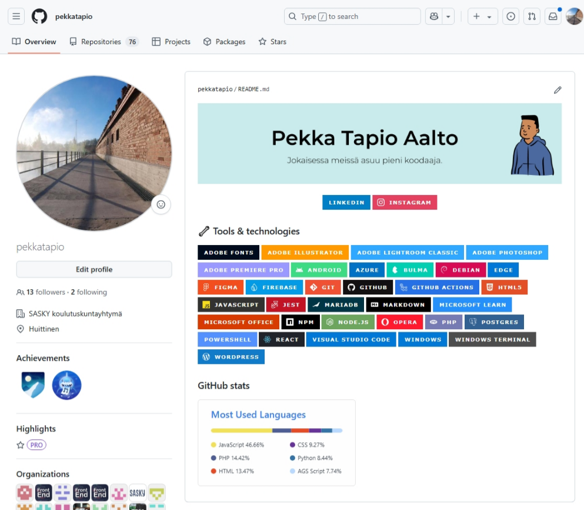Mermaid-kirjasto
Mermaid-kirjasto mahdollistaa erilaisten kaavioiden lisääminen helposti HTML-sivulle. Mermaidin tehokkuus on siinä, että kaavion rakenne esitetään tietynlaisena tekstiesityksenä, josta kirjasto muodostaa graafisen esityksen. Kirjastoa ylläpidetään GitHub-palvelussa, sen lähdekoodi löytyy mermaid-projektisivulta.
Seuraavaksi tutustutaan siihen, miten Mermaid-kirjasto lisätään osaksi HTML-sivua ja miten sillä piirretään kaavio.
Sivupohja
Aloitetaan tämä luomalla ensin yksinkertainen sivupohja. Luo projektikansioon uusi tiedosto, anna sen nimeksi
04-mermaid.htmlja liitä sen sisällöksi seuraava HTML-koodi.<!DOCTYPE html> <html lang="fi"> <head> <meta charset="UTF-8"> <title>Mermaid-kirjaston käyttö</title> <link href="04-mermaid.css" rel="stylesheet"> </head> <body> <h1>Mermaid-kirjaston käyttö</h1> TODO mermaid-kaavion piirto TODO mermaid-kirjaston tuonti </body> </html>Luo projektikansioon myös toinen uusi tiedosto, anna sen nimeksi
04-mermaid.cssja liitä sen sisällöksi seuraava CSS-sääntö.body { font-family: system-ui, sans-serif; min-height: 100vh; display: flex; flex-direction: column; justify-content: center; align-items: center; }Sivupohjan HTML-koodi ja CSS-määritykset ovat tuttuja jo aikaisemmista osista. CSS-tyylit määrittelevät fontiksi käyttöjärjestelmässä käytössä olevan fontin ja sisältö keskitetään pysty- ja vaakasuunnassa keskelle.
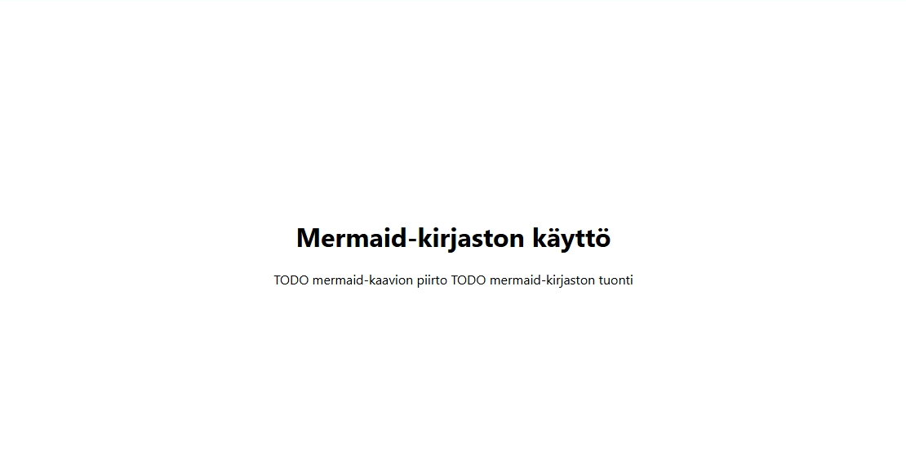
TODO-rivit sijoittuvat sivulle peräkkäin, koska niitä ei ole sijoitettu HTML-elementtien sisälle. HTML-kielessä perinteisellä rivinvaihdolla ei ole vaikutusta.
Mermaid-kirjaston tuonti
Aivan ensimmäiseksi Mermaid-kirjaston ohjelmakoodi täytyy tuoda osaksi omaa HTML-sivua. Tässä materiaalissa noudatetaan Mermaid-kirjaston Getting Started -sivun ohjeita kohdassa Calling the Mermaid JavaScript API.
Korvaa HTML-tiedostossa
TODO mermaid-kirjaston tuonti-rivi seuraavalla HTML-koodilla:<script type="module"> import mermaid from 'https://cdn.jsdelivr.net/npm/mermaid@11/dist/mermaid.esm.min.mjs'; mermaid.initialize({ startOnLoad: true }); </script>Tämä tuo Mermaid-kirjaston CDN-palvelusta ja käynnistää sen sivun lataamisen yhteydessä. Sivun lopussa oleva TODO-tekstirivi poistui, muuten sivun sisältö pysyi vielä ennallaan.
Kaavion piirtäminen
Mermaidissa kaavioiden piirtäminen tapahtuu kuvaamalla kaavion sisältö tietynlaisella tekstinä. Korvaa
TODO mermaid-kaavion piirto-teksti seuraavalla HTML-koodilla:<pre class="mermaid"> timeline title HTML-kielen historia 1992 : HTML 2 1997 : HTML 3 : HTML 4 2014 : HTML 5 </pre>Tämä määritys luo yksinkertaisen aikajanan, josta ilmenee vuosiluvut, jolloin HTML-kielen eri versiot on julkaistu. Tämä näyttää selaimessa seuraavalta.
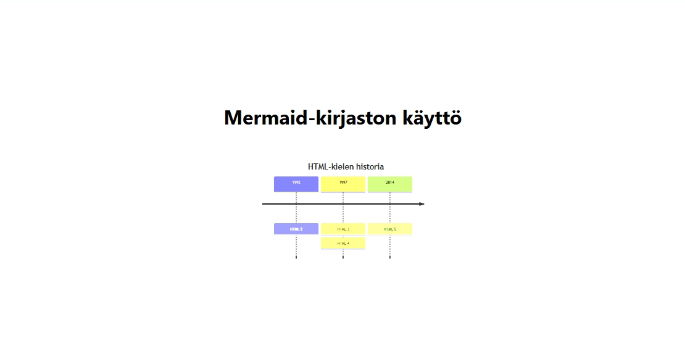
Kaavio saattaa piirtyä oletusasetuksilla liian pienenä. Kaavion kokoa voi muuttaa muokkaamalla
.mermaid-luokan CSS-asetuksia. Lisää seuraava CSS-sääntö CSS-tiedoston loppuun..mermaid { width: 80vw; max-width: 50em; }Tämä asettaa kaavion leveydeksi 80 % koko näyttöalueen leveydestä, mutta leveys voi olla maksimissaan 50 kirjaimen korkeutta. Tällä tavalla kaavio skaalautuu sivun mukana, mutta sen leveys ei ylitä sen maksimileveyttä.
Tämän lisäyksen jälkeen sivu näyttää seuraavalta.
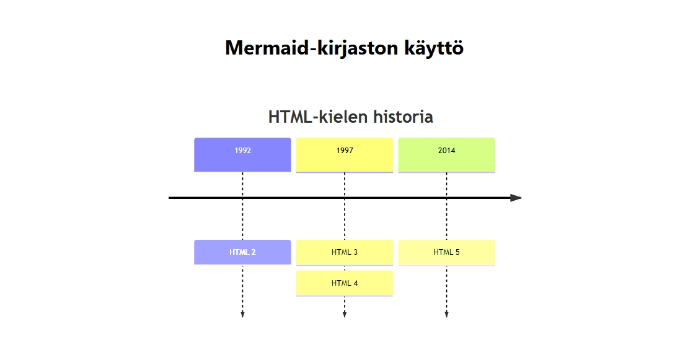
Samalla tavalla Mermaidilla voidaan piirtää muitakin kaaviotyyppejä, kuten esimerkiksi sekvenssikaavioita, tilakaavioita, Gantt-kaavioita, piirakkakaavioita, Gitgraph-kaavioita ja ajatuskarttoja.
API-rajapinnat
API on lyhenne sanoista Application Programming Interface ja se tarkoittaa liittymää eli rajapintaa, jonka välityksellä eri sovellukset voivat keskustella keskenään.
Kuvittele, että haluat tilata ruokaa ravintolasta. Sinun ei tarvitse tietää, miten kokki laittaa ruokaa, vaan riittää, että kerrot tarjoilijalle mitä haluat. Samalla tavalla ohjelmat käyttävät API-rajapintoja puhuakseen toisilleen. API on siis joukko sääntöjä ja ohjeita, joiden avulla ohjelmat voivat pyytää ja vaihtaa tietoja.
Kun käytät API-rajapintaa, sinun täytyy tietää kaksi tärkeää asiaa:
- Minne lähetät pyynnön (eli verkkopalvelun osoite, esim. https://www.esimerkki.fi).
- Missä muodossa haluamasi tieto lähetetään tai vastaanotetaan (usein JSON-formaatissa, joka on kuin selkeä tekstirakenne).
Esimerkki:
- Haluat hakea säätiedot ”Helsinki”-nimiselle kaupungille.
- API määrää, että pyyntö tehdään osoitteeseen https://api.saa.fi/helsinki?päivä=2025-04-16 (tämä on vain mielikuvitusosoite).
- Vastauksena voi tulla JSON-tiedosto, jossa lukee esimerkiksi:
{ "kaupunki": "Helsinki", "lämpötila": 15, "säätila": "Aurinkoinen" }Ohjelmasi ei tarvitse tietää miten säätiedot on kerätty tai miten palvelu toimii sisäisesti. Riittää, että API kertoo, miten pyyntö pitää tehdä ja miten tieto palautuu.
Miksi API on kätevä?
- Voit hyödyntää valmiita tietoja tai palveluita ilman, että sinun tarvitsee rakentaa kaikkea itse.
- Voit esimerkiksi hakea elokuvien tietoja, musiikkia, karttoja tai vaikkapa vitsejä.
Esimerkkejä avoimista ja ilmaisista API-rajapinnoista
Kaikki alla mainitut API:t eivät vaadi rekisteröitymistä tai mitään erityistä avainta, joten voit kokeilla niitä heti.
-
- Palauttaa erilaisia satunnaisia faktoja kissoista.
-
- Palauttaa tietoja koiraroduista ja satunnaisia kuvia koirista.
-
- Tarjoaa hauskoja (ja joskus kuivahkoja) Chuck Norris -vitsejä.
-
- Antaa satunnaisia neuvoja tai elämänohjeita.
-
- Tarjoaa tietoja Pokémon-hahmoista (nimiä, ominaisuuksia, kuvia jne.).
-
- Palauttaa tietoja eri maiden lipuista, pääkaupungeista ja kielistä.
-
- Luo satunnaisia ”feikkikäyttäjiä” (esim. nimi, sähköposti), joita voi käyttää testaamiseen.
-
- Näyttää yleiset pyhäpäivät eri maissa.
-
- Tarjoaa tietokilpailukysymyksiä (triviaa) monista eri kategorioista.
Miten näitä kokeillaan?
- Avaa verkkoselain.
- Liitä osoiteriville jonkin API:n kutsu, esimerkiksi
https://api.chucknorris.io/jokes/random. - Näet JSON-rakenteisen vastauksen, joka sisältää Chuck Norris -vitsin. Se voi näyttää tältä (lyhennetty esimerkki):
{ "icon_url": "https://assets.chucknorris.host/img/avatar/chuck-norris.png", "id": "abc123", "value": "Chuck Norris can divide by zero." }Tämä on yksinkertaisin tapa ”puhua” API:lle. Varsinaisessa koodissa tehdään yleensä fetch-pyyntö tai joku vastaava tapa hakea tietoa, ja sitten koodi käsittelee tulokset.
Yhteenveto: API on siis kuin ravintolan menu, josta ohjelmat voivat tilata tietoa tai palveluita. Sinä voit vain seurata rajapinnan (eli API-dokumentaation) ohjeita ja pyytää haluamasi tiedot – sinun ei tarvitse tietää, miten itse ravintola (palvelu) on toteutettu sisäisesti. Kokeilemalla avoimia API-rajapintoja opit, miten helppoa tiedon hakeminen ohjelmallisesti voi olla!
Oma pieni API-harjoitussovellus
Tämä ohje toteuttaa yhden mallisovelluksen, jossa julkista ja avointa API-rajapintaa käyttäen noudetaan tsekin nimipäiväkalenteri-sovelluksesta annetulla päivämäärällä kyseisen nimipäiväsankarin nimi.
Mitä haluamme ohjelman tekevän:
Käyttäjä valitsee päivämäärän selaimessa. Kun hän painaa "Hae nimipäivä" -painiketta, ohjelma:
- Lukee HTML-lomakkeesta valitun päivämäärän.
- Muotoilee sen oikeaan muotoon.
- Tekee API-kutsun tsekkiläiseen nimipäiväpalveluun.
- Hakee vastauksen (jos löytyy nimipäivä).
- Näyttää nimipäivän käyttäjälle.
HTML-runko
Käytämme alla olevaa HTML-runkoa, johon lisätään toiminnallisuutta useammassa vaiheessa. Alkuvaiheen runko on samanlainen, kuin aiemmatkin tämän materiaalin HTML-sivut.
<!DOCTYPE html> <html lang="fi"> <head> <meta charset="UTF-8"> <title>Tsekin nimipäiväkalenteri</title> <script> // tähän kirjoitetaan JavaScript-sovellus, joka // suorittaa varsinaisen datan noudon ja käsittelyn </script> </head> <body> <h1>Tsekin nimipäiväkalenteri</h1> <!-- tähän täydennetään HTML-lomake päivämäärän valitsemiseksi --> </body> </html>HTML-osion täydennys valmiiksi
Ensin lisäämme kaksi riviä HTML-koodiin:
- label on pelkkä ohjeteksti
- lomakekenttä, johon käyttäjä voi valita kalenterista päivämäärän.
- id="paivamaara" antaa sille yksilöllisen tunnisteen, jota JavaScript voi käyttää.
<label for="paivamaara">Valitse päivämäärä:</label> <input type="date" id="paivamaara">Lisätään nappi, jota painettaessa kutsutaan JavaScript-funktiota
haeNimipaiva(). Funktiota ei vielä ole, mutta kirjoitamme sen itse.<button onclick="haeNimipaiva()">Hae nimipäivä</button>Lisätään elementti, johon tulos (nimipäivä tai virheilmoitus) näytetään. Tässä käytetään teksikappale-elementtiä
<p>, mutta muitakin voi käyttää. Tämäkin elementti vaatii tunnisteen (id), jotta JavaScriptilla on siihen pääsy. Tunniste "tulos" on aika tavalla itsensä selittävä.<p id="tulos"></p>Nämä edellä luetellut neljä HTML-riviä lisätään
<body>-elementin sisään siellä olevan kommentin sijaan.JavaScript-funktio API-kutsun suorittamiseksi
async function haeNimipaiva() {- Määritellään asynkroninen funktio nimeltä haeNimipaiva. Sitä voidaan käyttää await-avainsanan kanssa (odotetaan API-vastausta rauhassa ilman että selain jäätyy).
Haetaan päivämäärä
const paiva = document.getElementById('paivamaara').value- Etsitään HTML:stä kenttä, jonka id on paivamaara.
- Otetaan sen arvo (value), eli käyttäjän valitsema päivämäärä. Se tulee muodossa "2025-04-16" (ISO-formaatti).
Tarkistetaan, onko päivämäärä valittu
if (!paiva) { alert('Valitse ensin päivämäärä!') return }- Jos käyttäjä ei ole valinnut päivää, näytetään ilmoitus.
returnlopettaa funktion suorittamisen tähän.
Muotoillaan päivämäärä oikeaan muotoon
const paivaObj = new Date(paiva)- Luodaan JavaScriptin Date-objekti käyttäjän syötteestä.
const paivaStr = ("0" + paivaObj.getDate()).slice(-2) const kuukausiStr = ("0" + (paivaObj.getMonth() + 1)).slice(-2)- getDate() palauttaa päivän (esim. 3). Lisäämme alkuun nollan ja otamme viimeiset 2 merkkiä → saadaan 03.
- getMonth() palauttaa kuukauden nollapohjaisesti (0 = tammikuu, 11 = joulukuu), joten lisätään +1.
- Lopputulos: jos päivä on 3. huhtikuuta, saadaan "03" ja "04".
Rakennetaan API-kutsun osoite
const apiUrl = `https://svatky.adresa.info/json?date=${paivaStr}${kuukausiStr}`- Luodaan URL-osoite, jota API käyttää.
- Esimerkiksi 03.04. → API-kutsu on:
https://svatky.adresa.info/json?date=0304Tehdään API-kutsu ja käsitellään vastaus
const vastaus = await fetch(apiUrl)- Tehdään verkko- eli API-kutsu. await odottaa vastauksen saapumista.
const tiedot = await vastaus.json()- Muutetaan saatu vastaus JSON-muotoon, jotta voimme käsitellä sitä JavaScriptillä.
Näytetään nimipäivä tai virheilmoitus
if (tiedot.length > 0) { // nimitietueita voisi olla taulukkomuuttujassa useita // otetaan ensimmäinen, eli alkio numero 0 let nimi = tiedot[0].name // alla oleva pitkä koodirivi jatkuu kahdelle riville document.getElementById('tulos').textContent = `Nimipäivä ${paivaStr}.${kuukausiStr}.: ${nimi}` } else { // alla oleva pitkä koodirivi jatkuu kahdelle riville document.getElementById('tulos').textContent = 'Ei löytynyt nimipäiviä valitulle päivälle.'; }- Jos API palauttaa tietoa (taulukko ei ole tyhjä), tulostetaan nimipäivät.
map(nimi => nimi.name)hakee kaikki nimikentät taulukosta.join(', ')yhdistää ne pilkulla erotetuksi listaksi.- Jos mitään ei tule, ilmoitetaan ettei nimipäiviä löytynyt.
Virheiden käsittely
} catch (virhe) { document.getElementById('tulos').textContent = 'Virhe haettaessa nimipäivää.' console.error(virhe) }- Jos kutsu epäonnistuu (esim. ei nettiä), näytetään virheilmoitus ja tulostetaan virhe konsoliin.
Koko sovellus valmiina
Voit kokeilla tätä sovellusta klikkaamalla linkkiä: Tsekin nimipäiväsovelluksen malli.
Alla koko koodi yhtenäisenä.
<!DOCTYPE html> <html lang="fi"> <head> <meta charset="UTF-8"> <title>Tsekin nimipäiväkalenteri</title> <script> async function haeNimipaiva() { const paiva = document.getElementById('paivamaara').value if (!paiva) { alert('Valitse ensin päivämäärä!') return } const paivaObj = new Date(paiva) const paivaStr = ("0" + paivaObj.getDate()).slice(-2) const kuukausiStr = ("0" + (paivaObj.getMonth() + 1)).slice(-2) // alla oleva pitkä koodirivi jatkuu kahdelle riville const apiUrl = `https://svatky.adresa.info/json?date=${paivaStr}${kuukausiStr}` try { const vastaus = await fetch(apiUrl) const tiedot = await vastaus.json() if (tiedot.length > 0) { // nimitietueita voisi olla taulukkomuuttujassa useita // otetaan ensimmäinen, eli alkio numero 0 let nimi = tiedot[0].name // alla oleva pitkä koodirivi jatkuu kahdelle riville document.getElementById('tulos').textContent = `Nimipäivä ${paivaStr}.${kuukausiStr}.: ${nimi}` } else { // alla oleva pitkä koodirivi jatkuu kahdelle riville document.getElementById('tulos').textContent = 'Ei löytynyt nimipäiviä valitulle päivälle.' } } catch (virhe) { // alla oleva pitkä koodirivi jatkuu kahdelle riville document.getElementById('tulos').textContent = 'Virhe haettaessa nimipäivää.' console.error(virhe) } } </script> </head> <body> <h1>Tsekin nimipäiväkalenteri</h1> <label for="paivamaara">Valitse päivämäärä:</label> <input type="date" id="paivamaara"> <button onclick="haeNimipaiva()">Hae nimipäivä</button> <p id="tulos"></p> </body> </html>Nimipäiväpalvelun API-kutsun dataformaatit
Mitä ja missä muodossa sovellus lähettää nimipäiväpalveluun API-kutsua käyttäen?
- URL-muoto:
https://svatky.adresa.info/json?date=DDMMAPIlle lähetetään yksi GET-parametri:
date- Se koostuu päivästä ja kuukaudesta numeromuodossa, ilman välejä tai välimerkkejä
- Esim:
- tammikuuta → 0101
- joulukuuta → 3112
Mitä tietoa sovellus API-kutsun jälkeen vastaanottaa ja missä muodossa?
API palauttaa JSON-muotoisen taulukon (array), jonka sisältö voi näyttää tältä:
[ { "name": "Radmila", "date": "0304" } ]- Jokaisessa objektissa voisi olla useampi nimi.
- koska tällä hetkellä kuitenkin palautuneessa JSON-objektissa on vain yksi nimi vaikka se onkin taulukkomuuttujassa, saamme
tiedot-taulukon ensimmäisen alkion käyttäen indeksiä 0 näin:tiedot[0] - kyseinen alkio sisältää kaksi kenttää:
- Kenttä
nameon nimipäivän nimi. dateon päivä ja kuukausi muodossa DDMM.name-kentän sisältö saadaannimi = tiedot[0].namesijoituksella muuttujaannimi.
Tekijät
Tällä sivustolla oleva materiaali on suunnattu ensisijaisesti SASKYn Koodaaja-koulutuksen hakuvaiheen orientaatiokurssin taustamateriaaliksi. Materiaali on toteutettu niin, että sitä voi käyttää myös itsenäiseen opiskeluun.
Tämän materiaalin on tuottanut Pekka Tapio Aalto ja Peter Forsell. Se on jaettu Creative Commons Nimeä 4.0 Kansainvälinen -lisenssillä.
-
{kind=link}